Esta Sección centra su análisis de manera particular en el Sistema de Acueducto y Alcantarillado, el cual constituye el eje temático principal de esta sección. Esta delimitación temática responde a la importancia fundamental del agua para el bienestar de la población, el desarrollo de la ciudad y la comprensión de las infraestructuras y sistemas que hacen posible su prestación.
Para conocer y profundizar en los demás sistemas de servicios públicos de Bogotá, se invita a consultar la plataforma DATACIVILIDAD, donde se presenta información detallada sobre la historia y el desarrollo de los servicios de energía eléctrica, gas natural, telecomunicaciones y manejo de residuos sólidos en la ciudad.
2.1. Historia del Sistema de Acueducto y Alcantarillado
A lo largo del siglo XX, la construcción de infraestructura para la captación, el almacenamiento, la distribución y el tratamiento del agua potable, así como para la disposición de las aguas residuales, se convirtió en una evidencia material de la relación que Bogotá ha construido con su territorio y las fuentes de agua circundantes. La escasez y contaminación del agua que circulaba por la ciudad a comienzos del siglo XX, fue un motivo de preocupación para el gobierno municipal que vio en la captación y purificación del agua de los ríos más cercanos —San Francisco, San Agustín, San Cristóbal y Arzobispo—, una solución al problema.
Sin embargo, cuando estos ríos no fueron suficientes para abastecer la demanda de la creciente población urbana, se optó por explorar cuencas hidrográficas más grandes y distantes, por lo cual se construyeron represas, embalses y plantas de tratamiento. La década de los años treinta del siglo pasado marcó el inicio de la llamada “modernidad”, de la “edad dorada” de los grandes proyectos de infraestructura, aunque los primeros pasos se remontan a tiempos anteriores que se narrarán brevemente a continuación. Para una vista gráfica y didáctica de la historia del sistema de acueducto y alcantarillado de Bogotá, consultar DATACIVILIDAD.
2.2. Gestión del agua antes de 1930: problemas de cantidad y calidad del agua
Desde antes de la fundación de Santafé de Bogotá en 1538, los habitantes del territorio han visto en los cerros orientales un lugar propicio para asentarse por su importancia geoestratégica, sus hermosos paisajes, y la abundante agua que baja de ellos. Desde los muiscas, ya gestionaban las inundaciones en épocas de lluvias en las zonas más bajas, con sistemas de zanjas y camellones que a su vez se aprovechaban para la agricultura y piscicultura, y obtenían agua potable de las quebradas cristalinas que bajaban de los cerros. La importancia del agua en el devenir de la humanidad explica el estrecho vínculo que ésta tiene con el paisaje y el desarrollo de la cultura.
Mapa 1. Áreas con camellones identificados con fotointerpretación
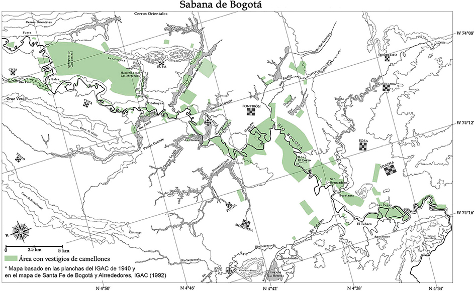
Fuente: Lorena Rodríguez Gallo. La construcción del paisaje agrícola prehispánico en los Andes colombianos: el caso de la Sabana de Bogotá (Bogotá: Universidad Manuela Beltrán, 2019), 196.En tiempos prehispánicos, la Sabana de Bogotá ofrecía un paisaje en el que se destacaban gran cantidad de lagunas, humedales y ríos, residuos de lo que fue el que se conoce hoy en día como lago de Humboldt, de hace más de 30 000 años, en el que los Muiscas celebraban sus ritos sagrados. El agua era parte esencial de la creación del mundo muisca, y muchos episodios de su mitología acontecieron en lagos y humedales.
Entre los dioses relacionados con el agua se cuentan Bochica —el héroe civilizador, creador del imponente Salto de Tequendama—, Sie —la diosa del agua—, y Bachué, quien representa el origen de la humanidad pues emergió de una laguna con un niño en sus brazos y su descendencia pobló la tierra. Además, está la diosa Chía, quien pidió a los muiscas ofrecer sacrificios y ofrendas a ríos y arroyos, lagos y lagunas, en señal de devoción y gratitud.
La abundancia de agua encontrada por los conquistadores en la Sabana, se convirtió en factor determinante para la fundación del caserío de Teusaquillo, antiguo nombre de Santafé de Bogotá. La ciudad se localizó entre los ríos San Francisco o Vicachá, y San Agustín, de los cuales tomaban líquido sus moradores transportándolo en múcuras hasta las viviendas, y a los cuales se vertían las aguas residuales. En algunas casas de Santafé existían nacimientos naturales y en otras se construyeron aljibes para recolectar agua subterránea y almacenar agua lluvia.
Más adelante, comienza el suministro de agua a partir de los recorridos a las partes altas de los cerros por parte de aguadoras o esclavos, tomándola de los ríos Vicachá y Manzanares y llevándola en múcuras. Luego se hacen las primeras pilas: la de la plaza de las Nieves, y luego el Mono de la Pila, que estuvo en la plaza Mayor desde 1583 a 1846. El agua era fundamental para el bienestar humano y el desarrollo de la sociedad, por lo que las pilas se empiezan a multiplicar por toda la ciudad como una necesidad de los primeros habitantes de la ciudad.
Así empieza la historia del suministro y manejo de las aguas de la ciudad, con todos sus problemas —como en 1638, cuando hubo una gran epidemia de tifo que acabó con el 20 % de la población, o los muy malos olores que hubo y sigue habiendo en algunos canales—, pero también con todos los aciertos que ha tenido su gestión hasta la conformación actual del sistema de acueducto y alcantarillado.
Imagen 2. Vista general del Mono de la Pila
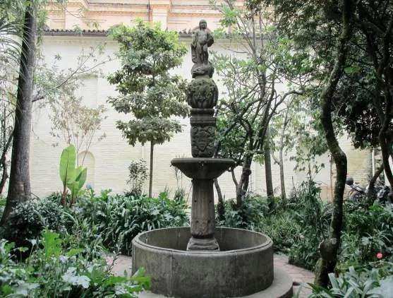
Ubicado actualmente en el patio central del Museo Colonial de Bogotá. Fuente: Rosa Eliana del Pilar Ortiz Castro, Universidad de los Andes, 2014. Disponible en: https://cienciassociales.uniandes.edu.co/opca/articulo/vaya-a-quejarse-al-mono-de-la-pila-un-relato-sobre-la-primera-fuente-publica-de-agua-en-bogota/Desde la fundación de Santafé hasta los inicios de la república, la población y la forma en que ésta gestionaba el agua estuvieron vinculadas al uso de pilas, chorros y aguas superficiales. Y a la disposición de las aguas residuales en canales, acequias y ríos que acarreaban problemas de salubridad para los habitantes aguas abajo de los vertimientos, así como degradación de la calidad ambiental.
Ya desde la mitad del siglo XVI, la ciudad empezaba a tener problemas de contaminación de las aguas, producto del mal uso que se le daba a los ríos por parte de los pobladores. En 1557, se expide la primera norma para evitar el deterioro del agua para consumo, que proveía el río San Francisco, prohibiendo la construcción de los molinos en sus orillas, lavar en él y arrojar inmundicias.
La disposición de las aguas residuales durante el período colonial se hacía en canales trazados en las calles. La sección transversal de las calles tenía la forma de artesa, con la parte más honda en el centro y por donde corría un caño revestido por lajas de piedra. Los habitantes arrojaban las aguas residuales y las basuras en este caño que corría por toda la ciudad, y la lluvia era la encargada de limpiar el primitivo drenaje que desembocaba en los mismos ríos o humedales al occidente de la ciudad. Estos vertimientos no tenían tratamiento alguno y continuaban su camino llegando al río Bogotá, al río Magdalena y al océano Atlántico.
Para 1807, la ciudad contaba con 22 806 habitantes, seis pilas y veinticuatro chorros para abastecer las necesidades de uso de agua, ya fuera para consumo humano, agropecuario, aseo o industria. Además, las muchas quebradas que bajaban de los cerros orientales eran captadas en las partes más planas, donde se asentaron diversas edificaciones.
A medida que fue creciendo la población y la demanda de agua, se presentaron problemas en la administración del recurso hídrico, ya que algunas personas perdieron su conexión —porque otras acaparaban el agua para desviarla hacia sus casas o la contaminaban antes de la captación de los vecinos aguas abajo—, lo cual generaba disputas entre los habitantes. Para 1821, la ciudad contaba con 27 201 habitantes y apenas 132 viviendas tenían con “mercedes de agua” o plumas concedidas por el municipio, las demás se surtían en las pilas y chorros públicos.
Imagen 3. Chorro de Padilla
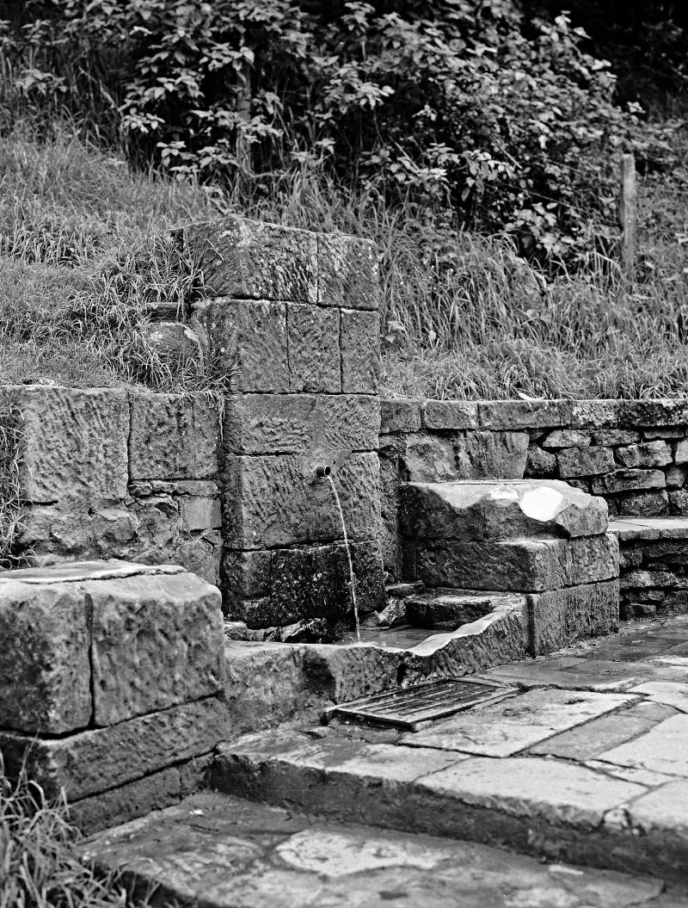
Una pila colonial que vertía agua fresca del cerro de Monserrate, ubicado al oriente de la ciudad.
Fuente: Mueso de Bogotá. IDPC. Fondo Saúl Orduz, 1979.
En 1814, debido a la falta de control de los drenajes de la ciudad y un sistema de alcantarillado pluvial, se desbordó el río San Agustín destruyendo el puente Lesmes, causando grandes estragos en la ciudad, dejando dos muertos y pérdidas de propiedades y ganado.
Aparte de la cantidad de agua en eventos de lluvia intensos, otro problema era la falta de alcantarillado de aguas residuales, lo que generaba pésimas condiciones de aseo en los canales, ríos, humedales, calles y el espacio público. Los habitantes de la ciudad se veían amenazados por un alto riesgo de contraer enfermedades y la ciudad entera era vulnerable a las epidemias.
Para mejorar las condiciones de salubridad, en 1825 se expide la Ley sobre Organización y Régimen Político y Económico de los Departamentos y Provincias. Esta Ley designó a las municipalidades como responsables de todo lo relativo a la policía de salubridad, que debían encargase del aseo y limpieza de las calles, mercados, plazas, hospitales, entre otros lugares. Además, debía procurar la conservación de las fuentes públicas y garantizar la abundancia del agua para el uso de habitantes y animales.
De esta manera, se construyó una represa de mampostería que recibía el agua pura de los cerros y alimentaba las fuentes que abastecían gran parte de la ciudad, contribuyendo así a la mejora en la calidad del agua de consumo y de la salubridad general. Así mismo, se expidió la Ley sobre Establecimiento, inversión y administración de Rentas Municipales, que impuso una renta sobre el agua que se tomara de los acueductos públicos por parte de las residencias y edificios.
En los años siguientes, el municipio de Santafé de Bogotá ordenó a la policía de aseo observar las corrientes de agua y que se cubrieran todas las que se considerarán peligrosas. Esto no impidió que, en 1870, cuando la ciudad ya tenía 60 833 habitantes, se presentara una virulenta epidemia de fiebre tifoidea debida a la contaminación de las fuentes de agua potable. El año siguiente, inició la construcción de los primeros tramos de un alcantarillado subterráneo, para evitar la contaminación de agua potable.
Durante buena parte del siglo XIX, la administración del abastecimiento de agua estuvo a manos de los “rematadores”, quienes se encargaban de operar y mantener el sistema, las cañerías, las cajas de reparto y las fuentes públicas. Operaron el sistema hasta que los conflictos creados por el mal servicio que prestaban obligaron al Cabildo a asumir nuevamente la administración de las aguas y finalmente, en 1869, se crea la Junta Administradora de Aguas.
Para 1882, con una población de 85 583 habitantes, solamente 300 inmuebles contaban con abastecimiento de agua directamente. En 1888, se inaugura el acueducto de Hierro, luego de que en 1886 se le concedió a Ramón B. Jimeno y Antonio Martínez de la Cuadra, el privilegio de construir y usufructuar un acueducto con tubería de hierro. Para 1897, con 93 800 habitantes, se llegó a contar con unas 2800 “plumas” particulares de agua en Bogotá y con 38 en Chapinero.
En cuanto al alcantarillado, la entonces Sociedad de Medicina y Ciencias Naturales emitió un informe sobre la higiene en Bogotá, en 1886, en el que señalaba que era necesario acabar con la costumbre de botar las heces y los residuos a las calles, y en cambio, construir letrinas en las casas y que se construyan urinarios y retretes públicos. Para el año 1890, menos de una tercera parte de la ciudad contaba con conexión parcial a alcantarillado subterráneo, una proporción muy pequeña para prevenir las epidemias por contaminación de aguas. Ese año se presentó una grave epidemia de tifo, generada por la mala calidad del agua que consumía la mayoría de la población.
Para el nuevo siglo, cuando Bogotá alcanzaba los 100 000 habitantes, las epidemias gastrointestinales y los malos olores por los vertimientos superficiales de aguas servidas eran comunes, por lo que en 1907 se realizaron análisis de calidad del agua del acueducto en la ciudad. Estos análisis demostraron que era por completo impotable, dada su altísima contaminación con materia orgánica y microorganismos patógenos.
Para 1912, con 133 058 habitantes, las enfermedades de origen hídrico llegaron a causar el 16 % de las muertes de los habitantes de la ciudad. Estas se daban debido a la contaminación de leche, hortalizas, ropa y fluidos de enfermos, y la propia agua que se usaba para el consumo. Para 1914, el municipio recompró la Empresa de Acueducto a Ramón B. Jimeno y Antonio Martínez.
Al igual que la contaminación del agua, su continua escasez fue un aspecto problemático. La incesante demanda de leña y materiales de construcción condujo a la deforestación y erosión de los cerros Orientales, una degradación de la calidad ambiental sin precedentes en toda la historia de este territorio, lo que disminuyó la capacidad del suelo para capturar y retener el agua lluvia que recargaba los ríos y quebradas que descendían por las pendientes. Esto alteró el ciclo hidrológico del altiplano de Bogotá.
El agua comenzó a ser más escasa a medida que la población urbana comenzó a crecer y los cerros perdían su calidad ambiental. Por esto, la Academia Nacional de Medicina recomendó comprar las tierras vecinas a las cuencas de los ríos y comenzar con su reforestación. Existían del orden de 6000 instalaciones de plumas en casas, una cobertura del 23 %. En 1918, el municipio hace las primeras compras de tierras en las cuencas de los cerros orientales y desaloja a 4000 pobladores. Estas tierras fueron entregadas para el manejo de la Empresa de Acueducto.
Entre 1914 y 1924, el Acueducto de Bogotá logró hitos importantes: sanear las finanzas de la empresa, los tanques de almacenamiento que antes eran 4 llegaron a 9, se duplicó la red de distribución de 70 a 140 km de tuberías, y se duplicó el número de instalaciones, de 5000 a 10 000. Así mismo, se empiezan a reforestar cuencas hidrográficas, se instalan los primeros contadores de consumo, y se introduce el cloro líquido como tratamiento de aguas 1.
La responsabilidad de construir un alcantarillado fue asumida por el Municipio y se prohibieron las acequias que corrían a cielo abierto por las calles. A partir de la segunda década del siglo XX, se ordenó cubrir los lechos de los ríos San Francisco y San Agustín, constituyéndose en la obra precursora del alcantarillado actual, que prioriza el enterramiento y canalización de los cuerpos hídricos naturales. Estos ríos ya estaban gravemente afectados, pues la calidad del agua empeoraba por la poca cantidad de agua cristalina que llegaba desde los cerros y que era insuficiente para diluir los contaminantes.
En 1920, luego de una nueva epidemia de fiebre tifoidea, se ordena al Acueducto que desinfecte todas las aguas para consumo con cloro líquido y se producen protestas de la población preocupada por sus posibles efectos secundarios. Sin embargo, los resultados de esta nueva tecnología de tratamiento de agua potable dan resultados, pues inmediatamente se presenta una disminución de las enfermedades gastrointestinales.
Bogotá crecía a un ritmo muy veloz, nunca visto en la historia, por lo que, previendo las necesidades futuras de agua, en 1924 se inaugura el primer “gran acueducto” de los ríos San Francisco y San Cristóbal, con tanques en Vitelma, Egipto y San Diego, desarenadores, y tratamiento con cloro. Debido a que gran parte del cloro era importado, se presentó escasez de cloro para desinfección del agua. Más adelante, la restricción a su comercialización durante la segunda Guerra Mundial, hizo que la producción nacional de éste químico se volviera imperativa, y se creó la Compañía Nacional de Cloro, en 1942.
Imagen 4. Tanque de almacenamiento de agua en el Barrio Egipto
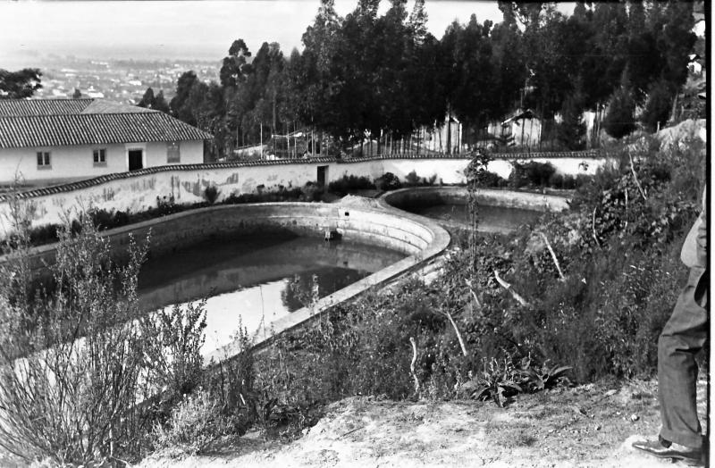
Fuente: Museo de Bogotá. IDPC. Luis Alberto Acuña, Quinta de Bolívar, 1920.Con una población de 263 325 habitantes, en 1930, los fuertes veranos llevan al municipio a crear la Comisión de Aguas, para gestionar el agua en la ciudad. Se instalan nuevos contadores para reducir el consumo de agua, y se considera indispensable recurrir a nuevas fuentes, por lo que se propone iniciar la exploración del páramo de Chingaza, el río Teusacá y el río Neusa. La Comisión de Aguas termina sus labores y el número de instalaciones llega a 14 500, sirviendo al 29 % de la población. El avance en la cobertura, tanto de acueducto como de alcantarillado, se irá incrementando con el paso de los años, hasta llegar a casi el 100 %.
2.3. Gestión del agua con base en la oferta: aproximación lineal y con énfasis técnico
Con la mejora en el conocimiento de la gestión del agua, de las condiciones económicas, el aumento de la población de la ciudad, la llegada de la ingeniería civil, hidráulica y sanitaria moderna, los contadores de agua, y los sistemas de tratamiento para la potabilización del agua, Bogotá pasó de gestionar las crisis de salubridad que ocurrían por su mala calidad, a seguir expandiendo la cobertura del servicio de acueducto y alcantarillado para industrias, instituciones y residencias, como un servicio público, derecho y prioridad para el desarrollo urbano.
Con una población cada vez mayor y el afán de alcanzar la modernidad que comenzaba, no solo en Colombia sino en todo el mundo, el municipio comenzó a planificar y gestionar el agua con base en la oferta requerida para suplir todas las necesidades de la capital en el presente y el futuro. Para esto se utilizaron tecnologías y conocimientos de Estados Unidos y Europa, para lograr un abastecimiento de agua estable para una población creciente.
2.3.1. Embalses de la Regadera y Chisacá, y planta de tratamiento de agua potable de Vitelma 1938–1950
Con la autorización de la construcción del primer embalse para abastecer de agua a Bogotá, se buscó represar las aguas del río Tunjuelito. El proyecto se conocería como el Embalse de la Regadera, y la firma de ingeniería encargada de la construcción fue Sanders Engineering Co. En 1938, con 361.032 habitantes, la ciudad inaugura el Embalse de la Regadera, en el marco de las celebraciones del cuarto centenario de su fundación.
Simultáneamente, se inaugura la planta de tratamiento de agua potable-PTAP de Vitelma, sitio de recepción del agua captada por la represa y el río San Cristóbal. En 1942, para complementar la PTAP de Vitelma, se construye la PTAP de San Diego, con las aguas del río Arzobispo, el río San Francisco y una conexión mediante tuberías con Vitelma.
Imagen 5. Captación de agua del Embalse la regadera en la localidad de Sumapaz
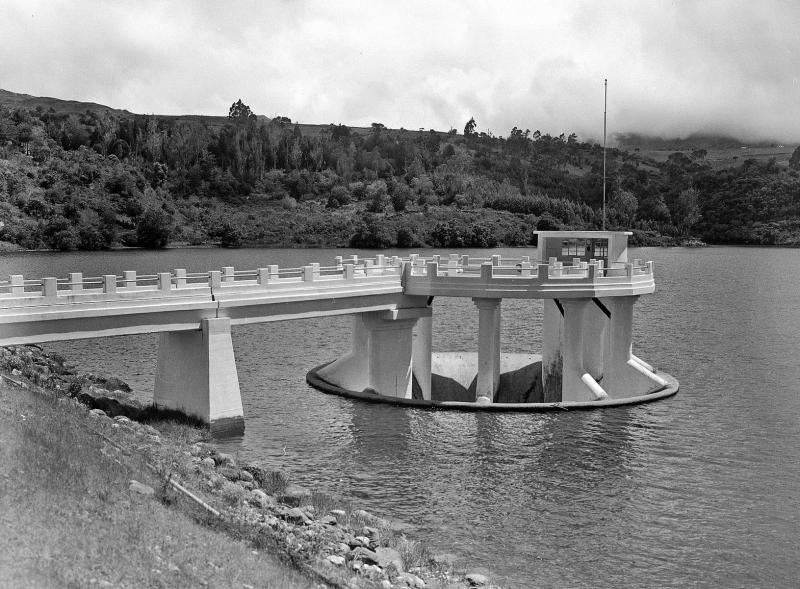
Fuente: Museo de Bogotá. IDPC. Fondo Saúl Orduz.
Imagen 6. Tanque de almacenamiento de agua potable en la planta de tratamiento de Vitelma
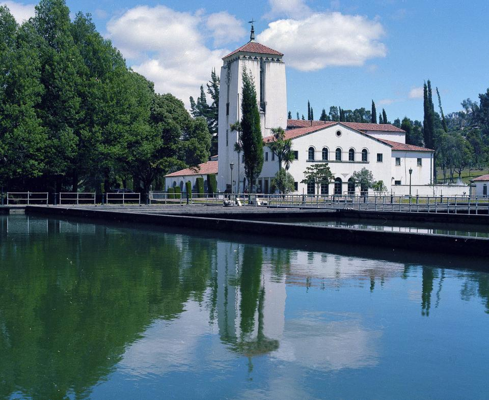
Planta de tratamiento inaugurada en 1938.Fuente: Museo de Bogotá. IDPC. Fondo Saúl Orduz, 1981.
Imagen 7. Tanque de almacenamiento de agua de la planta de tratamiento de San Diego
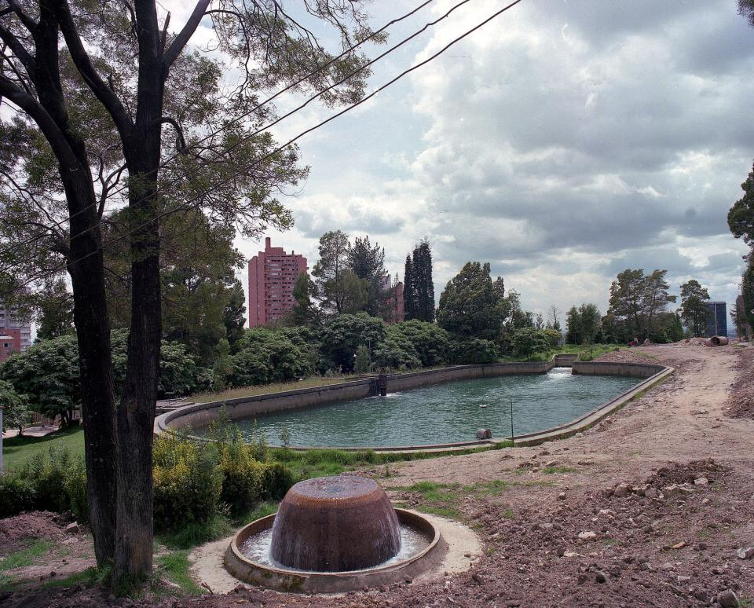
Planta inaugurada en 1943.Fuente: Museo de Bogotá. IDPC. Fondo Saúl Orduz 1982.
Entrada en operación la planta de Vitelma, Bogotá tenía 9.500 contadores de agua y más de 330 000 de los 360 000 habitantes, recibían agua potable. Para comprender la gestión del agua con base en la oferta del nuevo embalse de la Regadera, se hace necesario entender el concepto de balance hídrico de los embalses, establecido por el Modelo de Sistema de Acueducto de Bogotá.
Los ingresos al sistema de acueducto son las aguas recolectadas por el área de aducción del embalse en los eventos de lluvia, que llegan por escorrentía, ríos y quebradas a este cuerpo de agua. La precipitación, el porcentaje de escorrentía y el área de aducción son las variables más importantes para determinar la cantidad de agua que entra a los embalses. La precipitación varía a lo largo de los años y en períodos interanuales, lo que hace que haya algunos períodos de baja precipitación en los que se compromete el abastecimiento de agua potable y otros de altas lluvias, muy intensas, que no tienen este problema pero que causan inundaciones.
El porcentaje de escorrentía, por su lado, tiene que ver con la geología, topografía, la cobertura del suelo y la integridad de los ecosistemas que capturan agua, como los páramos y los bosques altoandinos. El área de aducción es la microcuenca del embalse, es decir, el área que está dentro de las líneas de división de agua en lo más alto de las montañas. En el caso de los embalses, está en la cuenca alta de las quebradas y ríos. A mayor precipitación, mayor porcentaje de escorrentía y mayor área de aducción, y, por tanto, mayores ingresos al sistema de abastecimiento.
Para el cálculo de los egresos del sistema, es importante tener en cuenta la demanda residencial, la demanda institucional, industrial, agropecuaria y comercial —todos son usuarios de la Empresa de Acueducto y Alcantarillado de Bogotá-EAAB—, y las pérdidas de agua en el sistema de distribución debido a filtraciones, la adulteración de contadores, y las conexiones ilegales. Para calcular estas demandas y pérdidas de manera empírica se instalan contadores de agua tanto en las salidas de los embalses como en las entradas de los usuarios —casas, industrias, comercios, entre otros—.
La diferencia entre los que sale de los embalses y lo que se contabiliza como agua consumida por los usuarios, son las pérdidas de agua. Actualmente, según investigaciones de la Universidad de los Andes y la EAAB, se pierde alrededor del 37 % del agua que sale de los embalses.
Otra forma de cuantificar la demanda, es usando las siguientes ecuaciones:
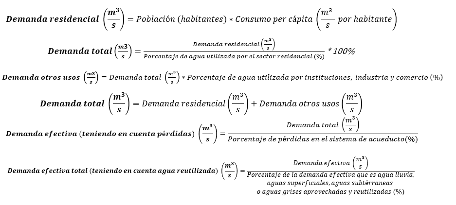
Para estas ecuaciones, se tienen en cuenta las siguientes variables según el escenario que se quiera estudiar:
· Población: Es la población residencial que utiliza el agua potable del sistema de abastecimiento de Bogotá en su día a día, para beber, cocinar, el aseo personal, entre otras. También es importante resaltar que la población varía a lo largo del tiempo, por lo que es importante utilizar una proyección de la población si se va a analizar un escenario futuro. Los municipios de Funza, Mosquera, Madrid y Soacha, también se sirven del Sistema de Acueducto de Bogotá.
· Consumo per cápita: Es la cantidad de agua que una persona promedio utiliza en sus actividades diarias. Esto depende de la eficiencia hídrica de las tecnologías que se usen en la casa y el clima en el que se encuentre.
· Demanda residencial: Es la cantidad total de agua utilizada por la población residencial en sus actividades del día a día, teniendo en cuenta un consumo per cápita igual para toda la población.
· Porcentaje de agua potable utilizada por el sector residencial: Es la proporción de agua utilizada para el sector residencial, con respecto al total del agua demandada.
· Demanda otros usos: Es la cantidad total de agua utilizada por la industria, el comercio, el sector agropecuario y las instituciones, que junto a la demanda residencial completan el total de demanda de agua.
· Porcentaje agua potable otros usos: Es la proporción de agua utilizada para usos diferentes al residencial, con respecto al total del agua demandada.
· Demanda total: Es la demanda de agua de toda la población, todo el sector agropecuario, todas las industrias, todos los comercios y todas las instituciones que se sirven del sistema de acueducto de la ciudad.
· Porcentaje de pérdidas en el sistema de acueducto: Es la proporción del agua que se pierde en los procesos de tratamiento, infiltraciones en los tanques, tuberías con fugas, conexiones ilegales o adulteración de contadores, con respecto al total del agua enviada para satisfacer la demanda total.
· Porcentaje de aguas lluvias, aguas superficiales, aguas subterráneas o aguas grises aprovechadas y reutilizadas: Es la proporción de otros tipos de agua diferentes a la potable, que se capta a través de sistemas de drenaje, captación de agua lluvia, bombeo de aguas subterráneas, y captura de agua superficial y su respectivo tratamiento, dependiendo del uso que se le vaya a dar.
· Demanda efectiva total: Es la cantidad de agua requerida para satisfacer la demanda total del sistema de abastecimiento de la ciudad, teniendo un porcentaje de pérdidas dentro del sistema de acueducto y agua reutilizada.
Con este marco conceptual, se pueden planificar y gestionar los embalses. En la época de construcción de La Regadera, hace casi cien años, los ingenieros se basaron en él para la selección del lugar y la gestión del embalse.
Por otra parte, en 1940 a través del Acuerdo 15, el Concejo de Bogotá había fijado el perímetro urbanizable de la ciudad, teniendo en cuenta los lineamientos fijados por el Acueducto Municipal, y prohibiendo abrir calles o ejecutar obras que dieran origen a nuevos barrios sin contemplar el alcance de la oferta de agua. Esto marco un punto fundamental en materia de planeación urbana, pues el suministro y planeación de las aguas se reconocen como determinantes sine qua non para el crecimiento formal de la capital.
En 1945, con una población de 510 390 habitantes, el verano obliga al racionamiento y al cierre de los colegios. De las 46 000 instalaciones del sistema de acueducto, solo 26 000 tenían contadores. El ingeniero Francisco Wiesner Rozo realiza, para la Empresa de Acueducto de Bogotá, un plano de los recursos hídricos de los que se sirve la ciudad y señala las zonas que debería adquirir para garantizar el abastecimiento. De esta manera, se inicia el proyecto de la represa de Chisacá, que avanza en la reforestación de los cerros orientales, se adquieren 25 000 hectáreas en la microcuenca del río Tunjuelo, y se refuerza la búsqueda de nuevas fuentes.
Mapa 2. Bogotá y sus cuencas hidrográficas de su propiedad y por adquirir
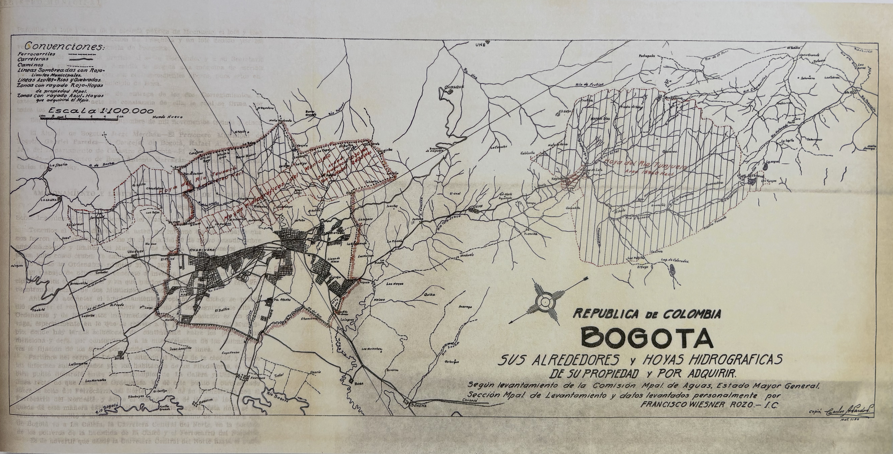
Fuente: Germán Mejía Pavony. Atlas histórico de Bogotá. Cartografía 1791-2007 (Bogotá: Alcaldía Mayor de Bogotá, 2007), 103.Las redes de acueducto eran de hierro fundido, por lo que se podían oxidar y volverse obsoletas después de unos años. Los canales del alcantarillado mixto (pluvial y residual), inicialmente fueron de hierro, pero luego se cubrieron con hormigón y otros materiales que, aunque fueron más eficientes en su construcción, también tuvieron problemas por su durabilidad. Eventualmente, se reemplazaron por polímeros como PVC, polipropileno o el polietileno, que son más eficientes, baratos y durables.
2.3.2. Contaminación de ríos y humedales por falta de tratamiento de aguas residuales
En su camino de descenso desde los altos páramos y cerros, cuyas faldas terminan en la Sabana de Bogotá, los ríos contaminados y con cada vez menos agua, alimentan los humedales pertenecientes a las áreas inundables del río Bogotá, sobre todo en la cuenca media. La importancia ecológica y económica de los humedales, mediante los servicios eco-sistémicos que prestan, justifica medidas de conservación. Los humedales actúan como esponjas que retienen agua durante las temporadas de lluvia, desempeñando un rol en la amortiguación de inundaciones. Los humedales también son actores importantes en la reducción de la contaminación del agua, pues la vegetación de estos procesa la materia orgánica, al mismo tiempo que retiene sedimentos y metales. Además, cumplen un rol fundamental en la regulación del clima, el ciclo hídrico y el abastecimiento del agua.
Sin embargo, la mala calidad del agua que llegaba a los humedales por la falta de alcantarillado y un sistema de tratamiento de aguas residuales, generaba olores, una mala calidad ambiental en general, y una apariencia desagradable. Afectaba la integridad eco-sistémica y la biodiversidad —el pez capitán, el pato zambullidor, los curíes, el guatín, los venados, la flora nativa de bosques, ríos y humedales, entre muchas otras especies— que, sumada a la presión de los humanos por la expansión urbana y agrícola, la cacería, la deforestación y el secamiento de los humedales, destruyó el paisaje, empeoró la seguridad territorial y la calidad ambiental de todo el territorio, y cambió completamente la identidad bogotana.
2.4. Gestión del agua con base en la demanda: aproximación con énfasis técnico y económico
Cuando crece la demanda de agua, los proyectos para aumentar la oferta deben someterse a evaluaciones financieras y proyecciones de población y de demanda, que permitan seleccionar las mejores alternativas de suministro. Se deben acompañar de estudios de impacto ambiental para que su correcta ejecución mitigue, evite y compense los impactos negativos que se presenten frente al medio ambiente y a las comunidades, buscando mantener y conservar los ecosistemas.
La gestión del agua con base en la demanda, es necesaria para una planeación del recurso hídrico que tenga en cuenta las dinámicas demográficas y culturales. La demanda de agua potable se puede calcular teniendo en cuenta factores como el consumo diario per cápita, que a su vez depende de los parámetros presentados en la siguiente tabla:
Tabla 1. Cuantificación de agua potable per cápita
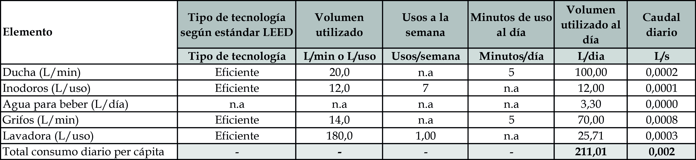
Fuente: Elaboración Sociedad de Mejoras y Ornato de Bogotá con base en valores de volumen utilizado obtenidos de la certificación LEEDAdemás del consumo diario per cápita, se debe tener en cuenta el agua potable utilizada por empresas, instituciones, comercio y el sector agropecuario. Se puede utilizar la misma tabla anterior, pero incorporando la información propia de cada industria, institución, finca o comercio. Además, se deben tener en cuenta las pérdidas por tuberías rotas, contadores adulterados, conexiones ilegales y fugas del proceso de tratamiento.
Por último, se considera el agua lluvia, superficial, subterránea o gris, reutilizada por los usuarios de la EAAB y que no se contabiliza dentro del agua utilizada en el Sistema del Acueducto de Bogotá.
Tabla 2. Caracterización demanda de agua potable total de la población de Bogotá Región
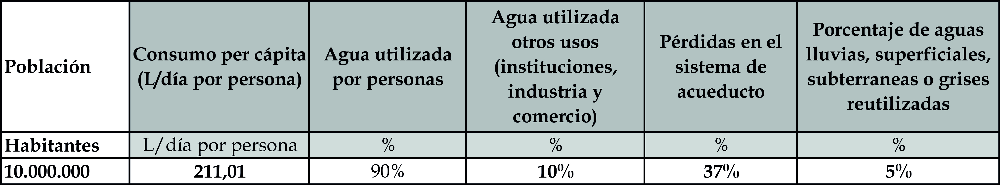
Fuente: Elaboración Sociedad de Mejoras y Ornato de Bogotá con base en el valor de pérdidas en el sistema de acueducto tomado de CIACUA-Universidad de los Andes
Tabla 3. Cuantificación demanda efectiva total
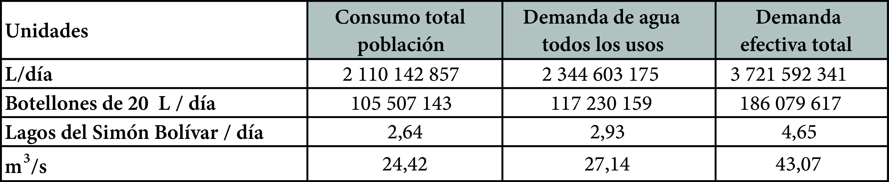
Fuente: Elaboración Sociedad de Mejoras y Ornato de BogotáDe esta manera se llega a la cuantificación final de la demanda efectiva total, teniendo en cuenta el consumo per cápita, las pérdidas, todos los usos que se le dan al agua, y el porcentaje de aguas reutilizadas. Para sopesar estos valores, se hizo una cuantificación en botellones de 20 litros y como proporción de un cuerpo de agua como el parque Simón Bolívar.
El crecimiento del Sistema de Acueducto de Bogotá, debido al período de incremento poblacional y urbano más acelerado en la historia de la ciudad, significó la introducción de un gobierno del agua enfocado en acciones de largo plazo y escalas espaciales mayores, pues el aumento demográfico sostenido había hecho inservibles las intervenciones inmediatistas. Por esto se idearon varios proyectos simultáneamente, mediante la regionalización del sistema de abastecimiento de agua potable con embalses en Chocontá, Sesquilé, Guatavita y Cogua, una PTAP en Zipaquirá, y aumento de la cobertura del servicio a municipios aledaños a Bogotá.
Los ingenieros y planificadores urbanos del siglo XX, fueron los que previeron la importancia de ampliar las fuentes de captación y regulación de agua para Bogotá, ubicando cuencas como las de los ríos Siecha y Teusacá, así como los páramos del Neusa, Chisacá en Sumapaz, o Chingaza. Utilizaron métodos de cálculo de la demanda de agua potable como el propuesto anteriormente, para poder plantear las acciones a largo plazo necesarias para asegurar el abastecimiento de agua potable para la ciudad hasta 2020. El trabajo era un gran reto porque la ciudad estaba entrando en la época de mayor tasa de crecimiento poblacional, lo que requería una gran cantidad de agua en un período de tiempo corto.
2.4.1. Los embalses de Neusa, Sisga, Tominé y la planta de tratamiento de Tibitoc: 1950–1962
Para 1946, la ciudad ya entraba al período de mayor crecimiento poblacional, con una tasa promedio anual del 6,76 %. Se inicia el planeamiento de los proyectos de las represas del río Sisga, y el Banco de la República comienza la construcción de la Represa del Neusa, para tener nuevas fuentes de agua potable y regular las crecientes del río Bogotá. En 1949, la Caja Agraria inicia la construcción del embalse del Sisga. En este instante, se presenta la mayor escasez de agua de los últimos cincuenta años.
Para 1951, se concluye la represa de Chisacá, que está más arriba que la de La Regadera, y las nuevas tuberías de Vitelma. En el mismo año entra en operación el embalse del Sisga y con estas obras se soluciona por unos años el abastecimiento de agua a Bogotá. El año siguiente entra en operación la reserva del Neusa, pero, nuevamente, se presenta un racionamiento en verano, pues la demanda efectiva de la población, que ya era de 812 337 habitantes, aumenta considerablemente.
El Gobierno Nacional apoya decididamente la construcción del acueducto del río Bogotá o de Tibitoc. Luego, en 1954, se crea el Distrito Especial de Bogotá, que incluye buena parte del páramo de Sumapaz, para protegerlo como reserva de agua. En 1954 se extendió la prestación de los servicios de acueducto y alcantarillado a los municipios anexados de Fontibón, Usaquén, Bosa, Usme, Engativá y Suba, con lo cual se amplió el perímetro urbano bajo la figura del nuevo Distrito Especial de Bogotá. Esto ayuda a la planificación regional del manejo de agua potable, residual y lluvia, e incrementa las posibilidades de exploración de nuevas fuentes de agua y de la conformación de un sistema de alcantarillado integral 2 .
Al analizar el impacto de estas tasas de crecimiento poblacional, el Distrito se da cuenta de que debe comenzar a gestionar el agua en base a la demanda, previendo el número de futuros habitantes de la ciudad, por lo que en 1955, cuando la ciudad ya llegaba a 1.000.000 de habitantes, se crea la Empresa de Acueducto y Alcantarillado de Bogotá–EAAB, como establecimiento público.
Pese a que hasta bien entrada la década del cincuenta, Bogotá aun padecía graves problemas de manejo de aguas residuales (lo que se traducía en complicaciones de higiene y salud pública), entre 1950 y 1955 el sistema de alcantarillado tuvo avances notorios en su organización, pues se fijaron reglas para liquidar las cuotas de alcantarillado, se tomaron medidas para la financiación de obras, y el alcantarillado pasó a ser manejado por la nueva EAAB.
Más tarde se inaugura la primera etapa del acueducto de Tibitoc, para aprovechar el agua del río Bogotá, que entra a operar en 1958. Tibitoc II entra en funcionamiento en 1972, con una capacidad de tratamiento de 12,6 m³/s, para satisfacer las necesidades hasta 1977. El 40 % de la población no tenía servicio de acueducto, pues este solo contaba con 73 992 abonados.
Imagen 8. Planta de tratamiento de Tibitóc
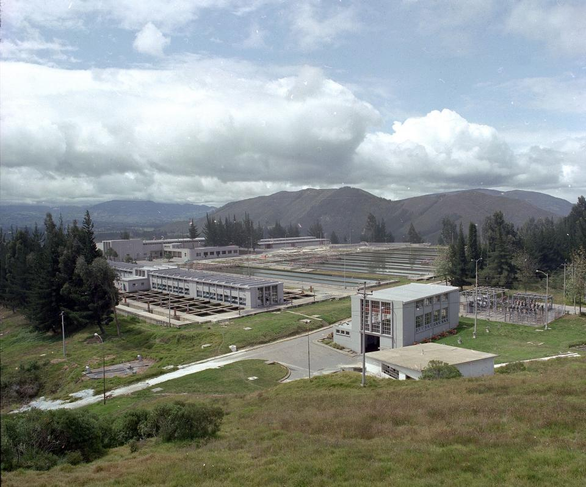
Fuente: Museo de Bogotá. IDPC. Fondo Saúl Orduz. 1982.En 1960, cuando la tasa de crecimiento anual era de 6,46 % y la población iba llegando a 1 400 000 habitantes, el servicio de la Empresa se expande, llegando a los 110 121 usuarios. En 1962, con 1 560 911 habitantes, finalizó la construcción del embalse de Tominé.
En 1966, INGETEC Ltda., inicia los estudios del gran proyecto de Chingaza, que capta las aguas de los ríos Guatiquía, Frío y Chuza, y de varias quebradas de la vertiente del Orinoco. Esta agua es transvasada a la cuenca del río Bogotá, se embalsa en embalse de Chuza, y se envía por gravedad a Bogotá mediante túneles de 45 km de longitud. En Bogotá la reciben el embalse de San Rafael, la PTAP Wiesner, y el tanque de Usaquén. Estas obras serán las que conforman el Sistema Chingaza (Chuza y San Rafael), el último para completar el sistema de abastecimiento de agua potable como se conoce hoy día en Bogotá, esto es, el Sistema Sur (Chisacá y La Regadera), el Sistema Norte (Neusa, Sisga y Tominé), y el Sistema Chingaza.
En 1968, la población ya había superado los 2 000 000 de habitantes, se dobló en un período de trece años. La empresa formula el Plan Maestro de Alcantarillado Bogotá, para la evacuación de las aguas negras y lluvias. Se presentó una fuerte sequía y se impuso un drástico racionamiento en la ciudad, por ello, se decidió adelantar la ampliación de Tibitoc y construir como complemento al proyecto del Bajo Teusacá, el cual nunca se realizó. Para 1971, la cobertura del servicio sigue aumentando rápidamente y se llega a cerca de 230 000 instalaciones. Las urbanizaciones informales hacen que las conexiones piratas sustraigan el 20 % del agua distribuida por la Empresa. Para esta época, también se inicia el suministro de agua a municipios vecinos, en ocasiones, valiéndose de operadores privados.
2.4.2. Embalses de Chuza y San Rafael, y la planta de tratamiento de agua potable Francisco Wiesner
El Código Natural de Recursos Naturales, entra en vigor en 1974. Proporciona el marco legal que permite planificar y ejecutar el Sistema Chingaza, de una manera integral y sostenible. Gracias a este marco conceptual, se estableció que el Parque Nacional Natural Chingaza, declarado como tal en 1977, era la infraestructura principal del sistema de abastecimiento, mientras que el embalse de Chuza era el componente final de almacenamiento.
Este enfoque representó la forma más inteligente y segura de garantizar el agua para Bogotá. No se trataba solo de construir obras grises, sino de proteger, legalmente, mediante la figura de parque nacional, la fuente misma de ese recurso: el ecosistema de páramo, fábrica natural de agua. Este caso es un ejemplo a nivel mundial de cómo una legislación ambiental avanzada, puede guiar armoniosamente el desarrollo de las ciudades, reconociendo y protegiendo la infraestructura ecológica que lo sustenta. Años después, la mayoría de la cuenca alta del río Bogotá, que también sirve de recarga para los embalses del sistema norte y sur, fue declarada área protegida.
En 1983, la población nuevamente se dobló, esta vez en un período de quince años. La ciudad tenía ya más de 4 000 000 de habitantes. Después de múltiples problemas y demoras ocasionadas por la difícil geología de la cordillera Oriental, se inaugura el Proyecto Chingaza, construido por la firma yugoslava G.P. Konstruktor de Split, con una capacidad de 14,4 m3/s, que equivale al 61 % del total concesionado. Sin embargo, en 1984, debido a derrumbes y taponamiento en los túneles, es necesario suspender la operación de Chingaza y adelantar las reparaciones coincidiendo con un verano severo, lo que creó una de las situaciones más difíciles para el abastecimiento de agua en la historia. Un año más tarde, se hacen las reparaciones a los túneles y entra en funcionamiento nuevamente el Sistema Chingaza.
Imagen 9. La presa de Golillas
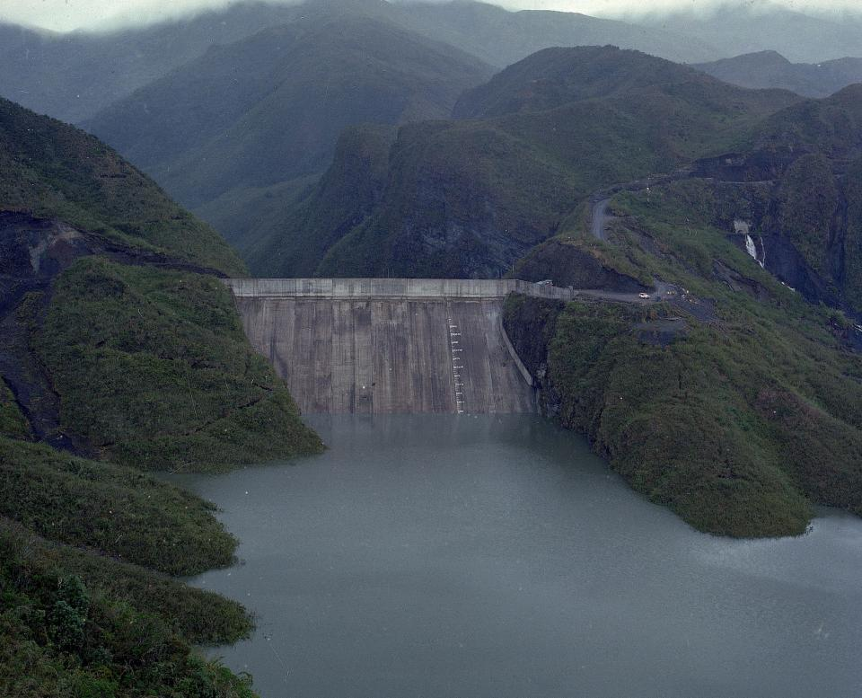
Una de las obras del proyecto del páramo de Chingaza, fue construida entre 1972 y 1985. El agua es almacenada en el embalse de Chuza. ** Fuente:** Museo de Bogotá. IDPC. Fondo Saúl Orduz. 1982.Un año más tarde, en 1986, se inicia el gigantesco Plan Bogotá IV, con el Banco Mundial. Incluye el Embalse de San Rafael, como reserva, la Planta de Tratamiento de Agua Potable Wiesner, la interconexión del sistema de distribución de agua potable de toda la ciudad, mediante el túnel de Los Rosales, líneas matrices y tanques de compensación. Este plan también incluye el suministro de agua potable a Soacha y Usme. En 1991, se terminan el túnel de Los Rosales, que entrega agua potable al sector del Parque Nacional, y el tanque del Silencio, que permitió la interconexión del sistema Chingaza con el sur de la ciudad. Fue el primer túnel ejecutado con máquina de escudo completo en roca, de 4 m de diámetro.
Imagen 10. PTAP Francisco Wiesner en San Rafael, La Calera
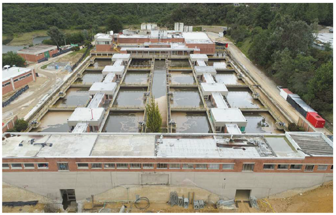
Fuente: Empresa de Acueducto y Alcantarillado de Bogotá.En 1992, se presenta un severo racionamiento por fallas en los túneles del proyecto de Chingaza. En 1993 se llega a 1 000 000 instalaciones de agua potable, cubriendo el 88 % de los habitantes. Las pérdidas se ubican en el 45 % del total del agua tratada y la carencia de conducciones para aguas residuales es del 20 % y el 30 % para aguas lluvias. En 1994, se adelanta el recubrimiento de los túneles de Chingaza y se finaliza la construcción del Embalse de San Rafael, parte del proyecto “Bogotá IV”.
En 1997, nuevamente, ocurren derrumbes en los túneles del sistema Chingaza, lo que obliga a un racionamiento de nueve meses. Se hacen reparaciones en los túneles y entra en operación la superestación de bombeo de San Rafael, evitando un racionamiento mayor para la ciudad. Se entrega en concesión la planta de tratamiento de agua potable de Tibitoc y se rehabilita la tubería Tibitoc-Casablanca, de 30 km de longitud, con un diámetro de 0,78 mts.
2.4.3. Destrucción de bosque andino, páramo y humedales
Durante el siglo XX, debido a la rápida y desordenada expansión urbana, se alteró en una inmensa proporción el de uso del suelo. Las necesidades alimentarias, laborales, urbanísticas, de infraestructura y de vivienda, generaron estos cambios. Gran parte de los suelos de la Sabana pasaron de ser rurales a urbanos; lo que antes eran grandes haciendas, se lotificaron cada vez más, generando impactos ambientales como la deforestación, la destrucción de hábitat, la contaminación por las actividades económicas y urbanas, y el cambio climático, entre otros.
Los ecosistemas más afectados fueron el páramo, que pasó a destinarse a usos agropecuarios, y los humedales y el bosque andino, que fueron destruidos para convertirse en suelo urbano y suburbano, o suelos agropecuarios. Estos cambios del uso del suelo fueron necesarios para satisfacer las necesidades de vivienda, servicios e infraestructura urbana de una población cada vez mayor. Sin embargo, en esa planeación urbana y económica, no se tuvieron en cuenta los efectos que estos impactos ambientales tendrían en los determinantes ambientales, los servicios eco-sistémicos, y el bienestar humano de esa misma población. Además, la constitución del sistema de drenaje de la ciudad, implicaba una ciudad que evacuaba sus aguas apenas caían, mediante tuberías, en vez de permitir que se alimentaran los cuerpos de agua naturales.
En la década de los treinta, se construyó al aeródromo de Techo, y años más tarde, la avenida de las Américas, obras que jalonaron el desarrollo urbano hacia el occidente y fueron las primeras en afectar los grandes lagos y humedales. Fraccionaron la laguna de Tintal en cuerpos de agua más reducidos, formando los humedales de Tibanica, La Vaca, El Burro y Techo, y el lago Timiza, lo que no sólo afectó el área física del lago, sino que modificó el funcionamiento normal del sistema hídrico de la zona, afectando la integridad eco-sistémica, la flora y la fauna nativas.
El crecimiento de la ciudad exigió el trazado de nuevas vías, como la Autopista Norte, construida en 1952, obra de vital importancia para la ciudad, pero que afectó otro de los grandes lagos de la ciudad, dividiéndolo en los actuales humedales de Guaymaral y Torca. De igual forma, la construcción del Aeropuerto y la avenida El Dorado, obras concluidas en 1958, afectaron la laguna que ocupaba esa área, fragmentándola en los humedales de Jaboque y Capellanía.
En 1961, el proyecto de Ciudad de Techo (hoy Kennedy), generó otro polo de desarrollo que pronto creó una serie de barrios periféricos de origen espontáneo, como Patio Bonito o Britalia, todos ellos construidos sobre la ronda y el cuerpo de agua de los lagos y humedales del sector (por lo que están expuestos a desbordamientos del río Bogotá, en tiempo lluvioso), y de los que sólo subsisten los pequeños humedales de Techo, El Burro y La Vaca.
En 1997 se inició el proyecto Ciudad Salitre. Su columna vertebral es la Avenida de la Esperanza, que vincula la urbanización con Fontibón y el centro de la ciudad. La construcción de la avenida afectó una laguna que para entonces abarcaba una extensa área (remanente del gran lago afectado años antes por la avenida el Dorado), y de la que hoy sólo sobrevive el humedal de Capellanía.
Al otro extremo de la ciudad, en la década del 90, Suba vivió un fuerte desarrollo urbano. En algunos casos los barrios siguieron las normas urbanísticas, pero en muchos otros, los barrios invadieron, no sólo las rondas de los humedales de Tibabuyes y la Conejera, sino que, con base en rellenos ilegales, fueron construidos sobre el cuerpo de agua de estos ecosistemas. Por último, debe mencionarse el meandro del Say, antiguo curso del río Bogotá en la localidad de Fontibón, que ha sufrido la invasión de su ronda y su cuerpo de agua por industrias del sector.
2.5. Gestión integrada del recurso hídrico: aproximación con énfasis técnico, económico y político
El territorio tiene una capacidad de carga definida por las determinantes ambientales, como el agua y la integridad eco-sistémica. Es por esta razón que además de una gestión con énfasis técnico y económico, se debe hacer con enfoque político y participativo, de forma que se atiendan los problemas relativos a la cantidad y calidad del agua y a un tiempo, se tenga en consideración la funcionalidad y la estructura del Sistema Ambiental de Bogotá.
La gestión integrada del agua produce importantes mejoras en el manejo del agua en diversos contextos geográficos y sociales. Su concepción sistémica permite precisar las interrelaciones entre las diversas variables y dimensiones del agua, y generar nuevos conocimientos, reconociendo su papel como eje articulador del funcionamiento de los ecosistemas y de la economía. Sin embargo, la aplicación de la Gestión Integral del Recurso Hídrico no ha sido fácil, pues implica la adopción de formas de pensamiento y de acción novedosas, que chocan con las tradicionales3 .
2.5.1. Nuevo marco legal y de acción de la gestión del agua
La Ley 99 de 1993, al crear el Sistema Nacional Ambiental-SINA, institucionalizó y descentralizó la gestión ambiental en Colombia, otorgándole a la CAR de Cundinamarca el rol autoridad ambiental en su jurisdicción, para la protección de ecosistemas estratégicos. Bajo este marco legal, la Corporación asumió la responsabilidad de proteger la cuenca alta del río Bogotá, un mandato que se materializó en la defensa de las rondas hídricas, la declaración de otras áreas protegidas y, de manera fundamental, la adopción del Plan de Manejo Ambiental de la Cuenca Alta del río Bogotá, elaborado por Thomas Van Der Hammen en 1999.
Este plan, más que un simple estudio, se erigió como la hoja de ruta visionaria que, bajo el paraguas del SINA, le permitió a la CAR comprender que la verdadera restauración del río no comenzaba en su contaminado cauce medio, sino en la protección integral de su cabecera, sus humedales, y su estructura ecológica principal. Así, la Ley 99 le proporcionó a la CAR las herramientas y la autoridad para transformar el diagnóstico científico de Van der Hammen, en una política de ordenamiento territorial, demostrando una vez más que la planificación urbana y regional depende de una legislación que obligue a proteger los procesos ecológicos esenciales.
Aun así, sigue la necesidad del enfoque técnico y económico por medio de programas de desmarginalización y modernización, expansión de redes de acueducto y alcantarillado, interceptores y colectores de alcantarillado, sustitución de tuberías de asbesto cemento, y expansión de las tuberías de PVC.
Para 1994, la tasa de crecimiento era del 2,3 % y la población ya llegaba ya a las 5 720 138 personas. Se inicia la gestión con medidas técnicas, económicas, comerciales y educativas, y se logra disminuir el consumo de 200 a 110 litros por habitante por día, lo que aplaza las necesidades de inversión en desarrollo de nuevas fuentes.
Con la necesidad de sanear el río Bogotá debido a los residuos que producen los más de 6 000 000 de habitantes que tiene la ciudad en el año 2000, más los de varios municipios de las cuencas alta y media, se inicia la operación de la Planta de Tratamiento de Aguas Residuales-PTAR Salitre. Se construye el túnel alterno de Usaquén y la central hidroeléctrica de Santa Ana, conectándolos con el sistema de red matriz Wiesner-Suba. Se construye el tanque de Suba, con capacidad de 9 000 m³. Se construyen las líneas de distribución y los tanques de compensación del sur, para aprovechar las aguas potables de la nueva planta de tratamiento de El Dorado, que abastece a más de 500 000 habitantes.
La Empresa de Acueducto adelanta los estudios básicos para definir los lineamientos para continuar con el saneamiento del río Bogotá y definir el sistema de tratamiento de aguas residuales más conveniente para la ciudad. Se concluye que es necesario descartar la solución de tres plantas de tratamiento y realizar otro diseño más amplio e integral. Por primera vez se incorpora en esta problemática la perspectiva regional en la gestión del agua. Esta perspectiva regional se resume en la siguiente ilustración, que sintetiza todos los procesos llevados a cabo por la Empresa de Acueducto y Alcantarillado de Bogotá, para el abastecimiento y tratamiento de agua:
Imagen 11. Diagrama de flujo del agua del sistema de Acueducto y Alcantarillado de Bogotá
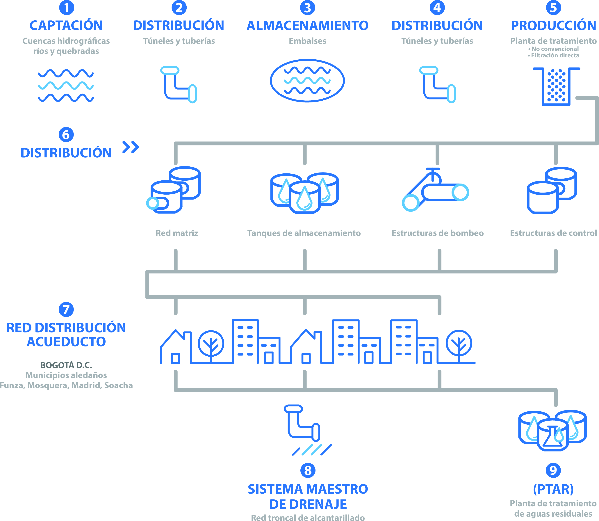
Fuente: Empresa de Acueducto y Alcantarillado de Bogotá-EAAB.Para seguir avanzando en el tratamiento de aguas residuales, en el año 2002 se terminan las obras del gran interceptor de aguas negras, con el tramo Torca-Salitre (interceptor del Norte), y se construye el canal Cundinamarca para evitar las inundaciones de Patio Bonito en el Tintal. Además, se adelantan los estudios del nuevo sistema de tratamiento de aguas residuales de la ciudad y se adopta la alternativa compuesta por el sistema de interceptores, las PTAR del Salitre (ampliada) y de Canoas, y las estaciones elevadoras y demás obras complementarias.
Se evalúa la operación de la PTAR Salitre y en vista de sus muy costosos y poco satisfactorios resultados, se decide dar por terminado el contrato con el operador y entregarla a la EAAB para su operación. Se recomienda ampliar la capacidad de la PTAR para tratar la totalidad del caudal del rio Salitre, antes de verterlo al rio Bogotá. La Empresa de Energía de Bogotá-EEB, adelanta el diagnóstico y el plan de acción para minimizar los impactos ambientales negativos del embalse del Muña sobre la población de Sibaté.
Por el lado de la gestión de las aguas pluviales, en 2004 se inicia la construcción del embalse de amortiguamiento Cantarrana, para mitigar las inundaciones del río Tunjuelo, como un sistema urbano de drenaje sostenible. Se inicia la operación de la central hidroeléctrica de Santa Ana y se revisten parcialmente en concreto los túneles de Chingaza. El año siguiente, la EEB contrata el Plan Director del Embalse de Tominé, para controlar su creciente deterioro y evitar su eutroficación. Este plan se pone en marcha y se ejecuta exitosamente.
Para el año 2010, la cobertura de agua y alcantarillado llega al 99 % de la población urbana de Bogotá. Se construyen los interceptores Fucha-Tunjuelo, Tunjuelo-Canoas, Túnel de Emergencia e Interceptor Tunjuelo Bajo, con tecnologías novedosas para construcciones subterráneas, minimizando el impacto ambiental y utilizando tuneladoras para suelos blandos y tanques y pondajes de amortiguamiento. Se construye el rebosadero de Chuza para aumentar la capacidad de almacenamiento del embalse.
Mirando en prospectiva las otras fuentes potenciales de agua potable a futuro, en el 2009 se concluye el estudio de Sostenibilidad de Agua Subterránea, suscrito con la Agencia de Cooperación Internacional del Japón, se construyen 13 pozos profundos y la primera planta móvil autónoma para la ciudad, de 10 L/segundo.
En 2012, cuando la población de Bogotá ya era mayor a los 7 000 000 de habitantes, el Consejo de Estado otorga la concesión de agua a la EAAB para el agregado norte, compuesto por el río Bogotá y los embalses de Tominé, Sisga y Neusa. Además, se establece el Mínimo Vital de Agua para los estratos 1 y 2 en Bogotá y se desiste del licenciamiento ambiental para el proyecto Chingaza II.
En las últimas décadas los conflictos de uso del suelo en la Sabana de Bogotá, producto del desarrollo acelerado de actividades agrícolas, ganaderas, mineras e industriales, y de los procesos de urbanización no controlada, han generado vertimientos domésticos e industriales no controlados y contaminación de las aguas del río Bogotá. Si a esto se le suma un mayor arrastre de sedimentos y deterioro de la calidad del agua cruda antes de entrar a las PTAP, y los efectos del cambio climático en la cantidad del agua, se genera un pésimo panorama para la calidad del agua en la Sabana si no se toma acción desde el gobierno y la ciudadanía.
2.5.2. Plantas de tratamiento de agua potable El Dorado, Yomasa, La Laguna y móvil
A finales del siglo pasado e inicio del actual, se conforman las PTAP restantes para completar el Sistema de Acueducto de Bogotá. Se trata de La Laguna, El Dorado, Yomasa y Aguas Claras. Surgen como necesidad de solucionar la demanda de agua de las partes altas del sur de la ciudad, específicamente las localidades de Usme, San Cristóbal y Ciudad Bolívar. Como el suministro de agua y la red de distribución funcionaban por gravedad, en las partes más altas de las localidades mencionadas no alcanzaba a llegar el agua. Por esto se construyeron, primero en 1985, la PTAP La Laguna en la localidad de Usme, y luego, en 2001 y 2003, El Dorado y Yomasa, respectivamente. Estas PTAP tenían una capacidad mucho menor a las de Wiesner y Tibitóc, como se explica en la Tabla al final del capítulo, pero lograron que el Acueducto pudiera llegar al 99,99 % de los habitantes de la ciudad, respondiendo a esta necesidad social.
En la primera y segunda décadas del siglo XXI, el Acueducto abrió unos pozos a lo largo de los cerros de Bogotá, aprovechando su capacidad como zonas de recarga de acuíferos a lo largo de las fallas geológicas. Para poder utilizar esta agua subterránea en situaciones de emergencia, por desabastecimiento o por daños en el sistema de acueducto, también se construyó una PTAP móvil en el 2011, completando la infraestructura de abastecimiento para la ciudad.
2.5.3. Sistema de alcantarillado y tratamiento de aguas residuales de Bogotá
La historia del río Bogotá no siempre fue de contaminación y abandono. La vida del pueblo muisca dependía del río, en él pescaban, con sus aguas alimentaban sus cultivos, y sus animales se refrescaban. Para ellos tenía vida propia, veían al río como a una gran serpiente que atravesaba la sabana, su cabeza era el páramo, sus curvas eran los cultivos, sus venas eran sus lagunas y, a más de 380 kilómetros de su nacimiento, su cola era la desembocadura. Y en su cosmogonía, el río era sagrado, en él purificaban y consagraban a sus “chyguy” o sacerdotes y le ofrecían rituales de agradecimiento, pues sus aguas eran la mayor fuente de su existencia.
Son varios los factores que han contribuido a la problemática de contaminación: el incremento poblacional de las ciudades y un sistema de alcantarillado ineficiente, actividades económicas agrícolas e industriales, y comportamientos culturales erróneos, desde el desecho de residuos hasta el vertido de contaminantes directamente a cuerpos de agua. Luego de diez años de procesos legales, el 28 de marzo de 2014, el Consejo de Estado profirió la sentencia sobre la descontaminación del río Bogotá, ordenando el diseño y la implementación de tratamiento y preservación.
El problema del manejo de las aguas residuales ya era de gran magnitud a comienzos de este siglo. Los peligros para la higiene eran evidentes y además ya existía conciencia sobre la contaminación que se estaba causando al río, todo lo cual exigía un adecuado procedimiento. Desde finales del siglo XX, se comenzó a pensar en las plantas de tratamiento de aguas residuales-PTAR, como una solución que permitiera disminuir el impacto contaminante que tiene la ciudad sobre el río Bogotá.
Seguidamente, se ideó la manera de construir alcantarillados separados, como una decisión ligada a los costos de la infraestructura y del tratamiento de las aguas que llegan a las PTAR. Esa separación del alcantarillado entre aguas lluvia y aguas residuales logra, entre otras cosas, reducir los tamaños de la infraestructura, los costos de operación, y mitigar el impacto ambiental en el sistema hídrico, manteniendo los volúmenes naturales de aguas lluvias y preservando la fauna y la flora en los cuerpos de agua de la ciudad.
Entre agentes públicos y privados, y los propios habitantes de la cuenca del río, se han venido congregando esfuerzos y acciones hacia la recuperación del río, incluyendo proyectos de gran envergadura como la ampliación de la PTAR El Salitre, con el objetivo de manejar las aguas residuales recibidas del río. Además de buscar impedir que 450 toneladas de basuras consigan llegar al río, se le unirá a la operación en el 2026 la PTAR Canoas, con la tarea de tratar el restante del 70 % de aguas residuales de Bogotá y el 100 % de las aguas de Soacha.
Se debe resaltar cómo la Empresa de Acueducto y Alcantarillado ha incorporado dentro de sus inversiones cada vez mayores recursos y atención para los asuntos de tratamiento de aguas residuales que, además de una mejoría sustancial en la calidad de vida de los bogotanos, permiten el saneamiento ambiental de los cuerpos de agua como es el caso del río Bogotá 4.
2.6. Sistema de Acueducto y Alcantarillado actual
En la última década, según la hoja de ruta de inversiones 2016-2025, los proyectos que han guiado la acción de la Empresa de Acueducto y Alcantarillado de Bogotá, son:
· Rehabilitación de 437 kilómetros de tuberías de más de sesenta años.
· Una cobertura del 99,9 % en agua potable.
· La contratación e inicio de obras de la estación elevadora Canoas.
· Diseños detallados listos y financiación de la construcción de la PTAR Canoas, que habilitará el tratamiento del 70 % de las aguas residuales de Bogotá y el 100 % de las de Soacha.
· Obras de ampliación de la PTAR Salitre.
· Obras para eliminación de conexiones irregulares del sistema de aguas residuales.
· Limpieza de ríos, quebradas y humedales con una extracción de más de 170 000 toneladas de residuos de los humedales y canales de aguas lluvias, que ha conseguido retomar el camino de la conservación ambiental de estos ecosistemas.
· 6 proyectos que permitirán recuperar la relación entre ciudadanía y naturaleza, a través del desarrollo de corredores ambientales que integren la estructura ecológica principal de la ciudad, con el desarrollo integral de los bogotanos 5 .
El Sistema de Alcantarillado cuenta con el Sistema de Drenaje Urbano o con la información que se puede consultar directamente del Geovisor de la EAAB 6.
Comenzamos con unas acequias y encañadas llevando aguas hasta las pilas de las plazas, hasta desarrollar una complejísima y óptima red para más de 10 000 000 de habitantes, con 7 represas, 55 tanques, conducciones en acero y concreto, estaciones reductoras de presión, más de 40 km de túneles, 9 plantas de tratamiento, 9 pozos de agua subterránea, sistemas de bombeo y más de 19 000 km de redes que garantizan a la población servida aguas de excelente calidad y mayor bienestar para la ciudad. El abastecimiento de agua potable a la ciudad se hace por cuatro sistemas denominados de la siguiente forma:
1. Sistema de los Cerros Orientales. Compuesto por las quebradas San Agustín o Manzanares, La Vieja, Las Delicias, los ríos San Francisco, San Cristóbal o Fucha y Arzobispo, que pertenecen a la cuenca del rio Magdalena. Fueron los abastecedores a filo de agua de las fuentes y pilas desde la fundación de Santafé, tanto para el acueducto de Aguavieja como para el Aguanueva. Sus plantas de tratamiento son Vitelma y San Diego. Existe una red de abastecimiento en caso de emergencia a través de agua subterránea y cuenta con una planta de tratamiento móvil, para suministrar agua tratada en lugares donde se requiera.
2. Agregado Sur o Sistema Tunjuelo Sumapaz. Compuesto por los embalses de La Regadera y Chisacá y los ríos Chisacá, Curubital, Mugroso y Tunjuelo. Todos pertenecen a la cuenca del rio Magdalena. Sus plantas de tratamiento son Vitelma, Laguna, Yomasa y El Dorado.
3. Agregado Norte o Sistema del río Bogotá. Compuesto por los embalses del Neusa, Sisga y Tominé y los ríos Bogotá, Neusa, Checua, Siecha y Aves. Todos de la cuenca del rio Magdalena. Su planta de tratamiento es Tibitóc.
4. Sistema Chingaza. Compuesto por la laguna natural de Chingaza, el embalse de Chuza y los ríos Chuza, Guatiquía, Frio, Playa y 24 quebradas de la cuenca del rio Blanco. Todos de la cuenca del rio Orinoco. El embalse de San Rafael y el rio Teusacá pertenecen a la cuenca del rio Magdalena. Su planta de tratamiento es la Francisco Wiesner.
Las aguas tratadas se distribuyen por las redes matrices a las 5 zonas en que Bogotá está dividida y a 11 municipios de la Sabana de Bogotá: Mosquera, Madrid, Fontibón, Funza, Cota, Chía, Cajicá, La Calera, Sopó, Gachancipá y Tocancipá. La operación de las plantas depende de factores claves para producir agua tratada, para ocho millones de habitantes, como son: la cantidad, la calidad, la continuidad, la disponibilidad, la demanda y los mantenimientos.
A continuación, se presenta un resumen del estado actual de Sistema de Acueducto y Alcantarillado de Bogotá, resultante de los modelos de gestión y las infraestructuras implementadas a lo largo de la historia.
Tabla 4. Resumen de los embalses del sistema de abastecimiento de agua potable de Bogotá
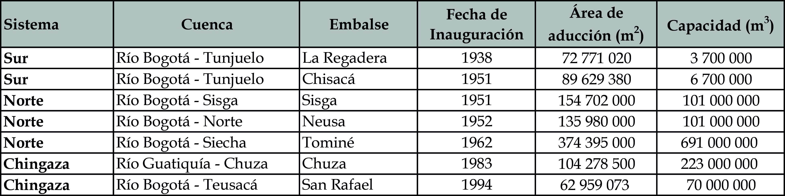
Fuente: Elaboración Sociedad de Mejoras y Ornato de BogotáTabla 5. Resumen de los pozos
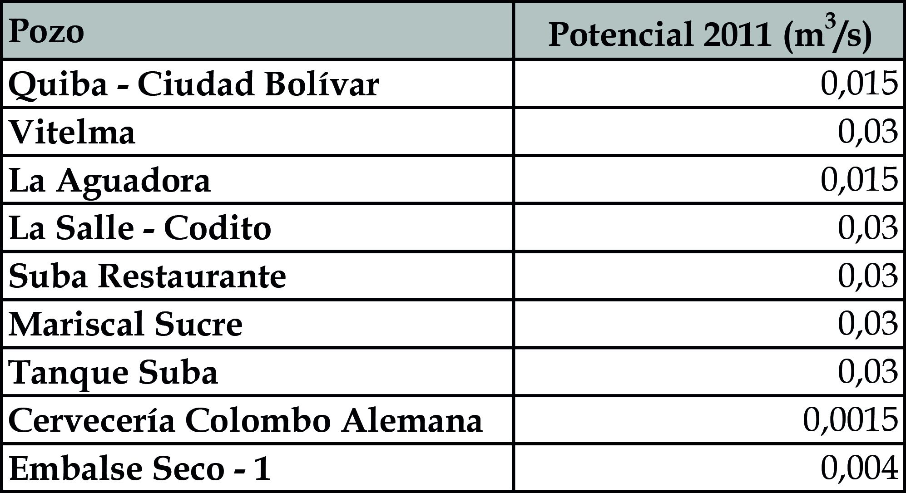
Fuente: Elaboración Sociedad de Mejoras y Ornato de BogotáTabla 6. Resumen de las plantas de tratamiento de agua potable y aguas residuales
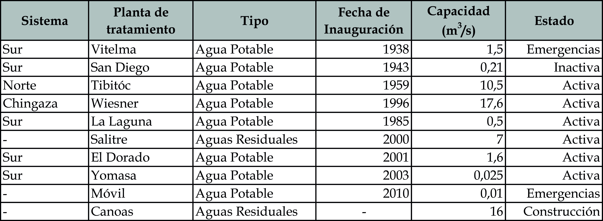
Fuente: Elaboración Sociedad de Mejoras y Ornato de BogotáMapa 3. Sistema de Acueducto y Alcantarillado de Bogotá
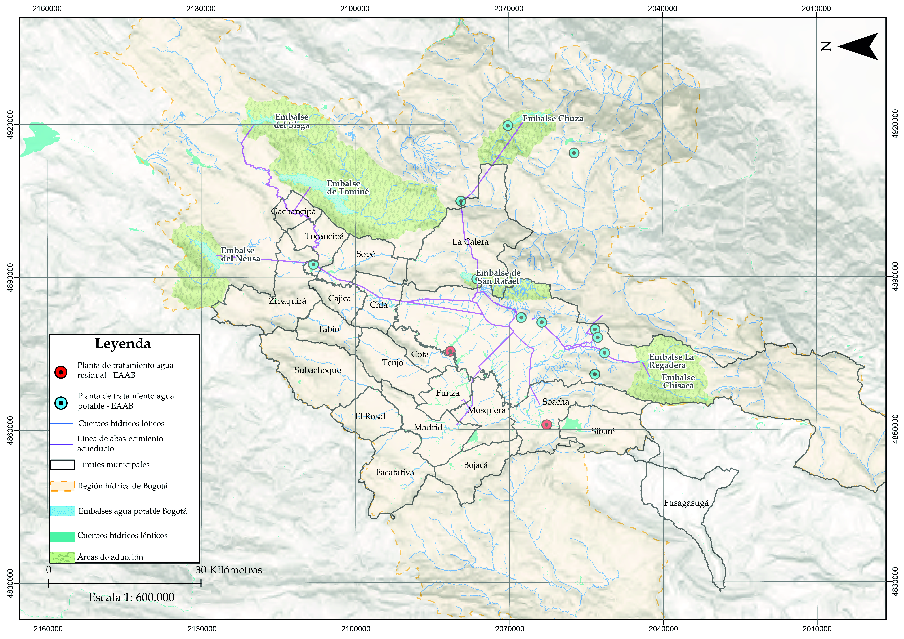
Fuente: Elaboración Sociedad de Mejoras y Ornato de Bogotá con información de la EAAB.Imagen 12. Histórico de la demanda de agua del Acueducto de Bogotá
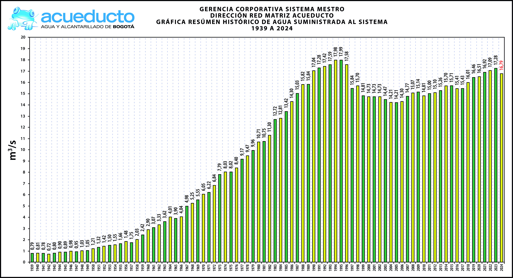
Fuente: Empresa de Acueducto y Alcantarillado de Bogotá – EAAB2.7. Gestión del agua para la sostenibilidad territorial
El agua ha sido, históricamente, el elemento estructurador de las sociedades humanas y de sus territorios. Desde las primeras civilizaciones precolombinas hasta las ciudades contemporáneas, su gestión ha reflejado en el paisaje los valores culturales, las relaciones con el entorno natural, las capacidades tecnológicas, y las estructuras políticas de cada época.
En el caso colombiano, y particularmente en Bogotá, el desarrollo del sistema de acueducto y alcantarillado constituye una narrativa compleja de relación entre naturaleza —ecología, geografía, meteorología e hidrología— y cultura —ciencia, tecnología, política y poder—.
La historia del Acueducto de Bogotá nos muestra cómo ese requisito de contar con agua sirvió para prever, incluso desde la creación de la ciudad, la manera como se debe abordar el ordenamiento del territorio y la trascendencia que tiene para todos el generar conciencia respecto al uso eficiente del recurso y el cuidado sobre las fuentes hídricas que alimentan el sistema, garantizando así un abastecimiento de agua de buena calidad, duradero y sostenible.
En muchos casos el agua no solo representa consumo para la ciudadanía, también está ligada al uso y disfrute del espacio público, lo que exige un fortalecimiento de la infraestructura verde-azul y gris que lo integra, para mejorar la calidad ambiental y resignificar la relación naturaleza-cultura. Por esto es necesaria una gestión diferencial y compleja para los diferentes tipos de agua y el uso que se les pude dar en los espacios de importancia ecológica e hídrica.
Esta sección propone una aproximación de la gestión del agua para la sostenibilidad territorial en base a entender el sistema de acueducto y alcantarillado de Bogotá como un sistema adaptativo complejo. Esto requiere tanto de la complejización del agua, como de la correcta gestión e innovación de la infraestructura gris y verde, mediante la conformación y restauración de la Estructura Ecológica Principal de Bogotá, que recoge el potencial de un sistema sostenible a lo largo de los trayectos hídricos y los integra con la estructura urbana. Así se evidencia la manera en la que el agua tiene el potencial de determinar nuestra vida, generar grandes cambios en la cultura y el paisaje, y ordenar el territorio.
Así el programa Construyendo Civilidad-Cátedra Bogotá busca concientizar a los ciudadanos para poder orientar nuestras acciones y trasformaciones territoriales hacia la civilidad con la naturaleza y el ciclo hídrico de Bogotá, mediante la implementación de infraestructuras verdes y azules, y el aprovechamiento de las infraestructuras grises de abastecimiento de agua potable y tratamiento de aguas residuales.
2.7.1. Complejizar el recurso hídrico: la articulación entre naturaleza, técnica y cultura
Complejizar el recurso hídrico requiere de una gobernanza proactiva y participativa que supone:
· Crear espacios de planeación por cuencas que integren actores públicos, privados, comunitarios y académicos, que velen por la función social y ecológica del territorio, así como por el bien común de habitantes humanos y no humanos, presentes y futuros.
· Fortalecer la educación ambiental y cultura del agua, promoviendo la corresponsabilidad ciudadana en el ahorro, uso eficiente y conservación del recurso hídrico y ecosistemas claves como humedales, quebradas y páramos.
· Establecer mecanismos de transparencia y rendición de cuentas sobre la calidad del agua, las inversiones en infraestructura verde, azul y gris, y los impactos ambientales en cuerpos hídricos, para evitar injusticas ambientales y avanzar hacia la sostenibilidad territorial.
· Reconocer el agua como un bien común y un derecho humano, lo cual obliga a políticas redistributivas que garanticen acceso equitativo y tarifas justas.
El papel político del agua, por tanto, radica en su capacidad de integrar las agendas de justicia ambiental, ordenamiento territorial y equidad social, a través de un enfoque de desarrollo, conservación y restauración de infraestructura verde, azul y gris, a lo largo y ancho del territorio.
La transición de la gestión integral del recurso hídrico a la gestión del recurso hídrico para la sostenibilidad territorial, implica un cambio en los valores culturales con los que nos relacionamos con la naturaleza, y una concientización acerca de los impactos ambientales que generamos como individuos y sociedad.
Esta complejización del recurso hídrico permite la gestión hídrica para la sostenibilidad territorial al repartir las responsabilidades y el poder de las transformaciones territoriales en las escalas individuales, comunitarias, paisajísticas, identitarias, regionales y globales.
Además, se deben tener simultáneamente perspectivas de corto plazo —organización social para la resiliencia, construcción y urbanismo sostenible, recolección de aguas lluvias, construcción de sistemas de drenaje urbano sostenible y conservación de ecosistemas—, de mediano plazo —sistemas de tratamiento descentralizados de diferentes tipos de aguas, conformación de corredores ecológicos y recuperación de rondas hídricas—, y de largo plazo —restauración de ecosistemas claves en el ciclo hídrico, recuperación de los acuíferos, descontaminación del río Bogotá y un balance hídrico de la cuenca del río Bogotá monitoreado al minuto—.
Complejizar el agua también implica comprender los diferentes usos y tipos y gestionarlos teniendo en cuenta sus características fisicoquímicas y microbiológicas, para saber su potencial y sus limitaciones. Los tipos de agua son definidos por normas y leyes basados en aspectos técnicos, mientras que los usos del agua son dados por razones culturales que incluyen desde el consumo de las personas y los ecosistemas, hasta los usos económicos y recreativos.
Tabla 7. Tipos y usos del recurso hídrico
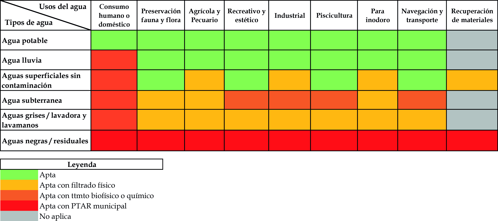
Fuente: Elaboración Sociedad de Mejoras y Ornato de Bogotá con base en ejemplo de las muestras de los diferentes tipos de agua en un lugar y momento específico de Bogotá.Los diferentes tipos de agua deben ser gestionados de diferentes formas, según sus características de calidad, para invertir el capital económico, social y humano de manera eficiente y generar el mayor bienestar posible. Además, las mediciones de calidad se deben hacer continuamente, pues pueden variar en el tiempo, lo que implicaría cambios en los tratamientos que se deberían dar para los diferentes usos del agua.
La gestión del recurso hídrico para la sostenibilidad territorial de Bogotá, exige superar la gestión hídrica lineal que no diferencia los diferentes tipos de agua que se generan y se ofertan en el territorio. Además, exige pasar de una infraestructura puramente gris centralizada —plantas de tratamiento, sistema de distribución del acueducto, sistemas de alcantarillado pluvial y de aguas residuales, y embalses— que produce agua potable costosa y escaza para cualquier uso, y cuyo tratamiento posterior también tiene altos costos, a integrarla con una infraestructura verde y azul donde los ecosistemas naturales o artificiales —SUDS, EEP: parques, humedales, ríos, quebradas, cerros, fauna y flora—, se integren al sistema de servicios públicos urbanos y rurales.
Mapa 4. Infraestructura verde y gris de Bogotá y la Región
 Fuente: Elaboración Sociedad de Mejoras y Ornato de Bogotá
Fuente: Elaboración Sociedad de Mejoras y Ornato de Bogotá
La consolidación del Sistema Ambiental de Bogotá es necesaria para lograr esta visión. Se trata de un sistema continuo de cerros, bosques, humedales, ríos y zonas verdes que reconecta la ciudad y sus ciudadanos con sus cuerpos de agua, mejorando la regulación de la cantidad y calidad hídrica, y ofreciendo espacios públicos verdes y resilientes por y para los ciudadanos. Este sistema constituye un modelo innovador de planificación urbana con el agua como ordenadora del territorio, que materializa las soluciones basadas en la naturaleza 7 como un acercamiento a la seguridad hídrica, sostenibilidad territorial, justicia ambiental y bienestar.
Para lograrlo, se plantea la creación de un Fondo Regional Hídrico que consolide recursos financieros provenientes de tasas y compensaciones ambientales, tarifas por uso del agua, y contribuciones del sector privado y de organizaciones sociales y comunitarias, para invertir en innovación tecnológica, conservación, restauración, monitoreo y educación del sistema ambiental y de acueducto y alcantarillado.
El valor del Sistema Ambiental de Bogotá para la gestión integral del agua para la sostenibilidad territorial, radica en la articulación entre infraestructura gris y verde, participación ciudadana, responsabilidad del sector privado y de gestión pública, convirtiéndose en un laboratorio ciudadano de sostenibilidad territorial. Promueve una nueva relación simbólica con el agua y refuerza la identidad territorial bogotana centrada en el agua y el territorio, desde las transformaciones del paisaje y la cultura.
Esta integración de la gestión del recurso hídrico utilizando la cultura, la técnica y la economía permite pasar de una gestión de gasto a una gestión de inversión: invertir en la naturaleza como infraestructura verde y azul esencial. Cada peso destinado a restaurar y proteger la infraestructura verde y azul de la Sabana, representa ahorro económico futuro en salud pública, tratamiento de agua, aumento de biodiversidad y servicios ecosistémicos, mantenimiento del sistema de acueducto y alcantarillado, impactos por desastres, y mejora del bienestar en todas sus dimensiones.
La gestión del agua debe anticipar, y no solo reaccionar, a la incertidumbre y los riesgos climáticos. El aumento de la variabilidad pluviométrica, de la temperatura en zonas urbanas, los eventos climáticos extremos, el crecimiento urbano desordenado y la degradación ambiental actual, exigen una planificación proactiva, basada en escenarios y en la capacidad de adaptación del territorio. Esto implica:
· Promover el monitoreo ciudadano de la meteorología y los servicios públicos, especialmente el agua, para hacer un uso más eficiente de estos, asegurar la calidad, mitigar riesgos y prevenir epidemias y desastres.
· Fortalecer los sistemas y modelos de información hidráulica, hidrológica y geográfica, e implementar algoritmos de modelación de desarrollo territorial y gemelos digitales éticos, que tengan en cuenta la complejidad del territorio para la toma de decisiones.
· Invertir en infraestructura verde y azul a través de soluciones basadas en la naturaleza (restauración de rondas hídricas, aprovechamiento de aguas lluvia, sistemas urbanos de drenaje sostenible, restauración de ecosistemas), arborización, reverdecimiento, ecourbanismo, y construcción sostenible, desde la escala individual hasta la gubernamental.
· Invertir en infraestructura gris descentralizadas de tratamiento de aguas, con Sistemas Urbanos de Drenaje Sostenible-SUDS, sistemas de tratamiento para los diferentes tipos de agua, y tanques de almacenamiento de agua lluvia, entre otros.
· Integrar la gestión del riesgo, la oferta de espacio público y las acciones de restauración y conservación con el ordenamiento territorial, priorizando zonas vulnerables socialmente.
· Promover una economía circular del agua: reúso y tratamiento descentralizado, dependiendo de la calidad de los diferentes tipos de agua y aprovechamiento de aguas lluvias.
La gestión del recurso hídrico para la sostenibilidad territorial no se entiende como un proceso estático, sino como un proceso de aprendizaje y ajuste continuo dentro de un sistema adaptativo complejo, dinámico, urbano-rural, y regional, con características naturales y culturales específicas para cada barrio. La gestión del agua en Bogotá debe trascender el paradigma de la administración de un recurso para convertirse en una estrategia territorial de recuperación del Sistema Ambiental de Bogotá, sostenibilidad, justicia y bienestar.
Solo una aproximación compleja, integral y proactiva —articulada a través de enfoques participativos, políticos, técnicos y económicos—a la gestión hídrica, permitirá construir una ciudad-región que tenga buena oferta de espacio público, viva en armonía con su ciclo hídrico y la naturaleza en general, y garantice la integridad ecológica, el derecho al agua y el derecho a un ambiente sano para las generaciones presentes y futuras.
2.8. La infraestructura gris para la gestión del recurso hídrico: el sistema de acueducto y alcantarillado, pavimento y cemento
Como hemos visto en la sección anterior, la historia del sistema de abastecimiento en Bogotá se remonta a los acueductos coloniales que utilizaban fuentes superficiales de los ríos San Francisco y San Agustín, entre otras quebradas aledañas. Durante el siglo XIX, la provisión de agua era precaria y desigual, limitada por la escasez debido a la falta de infraestructura gris, problemas de calidad, y la concentración del servicio en sectores privilegiados.
A comienzos del siglo XX, la expansión urbana forzó la creación de una institucionalidad moderna: el Acueducto Municipal y posteriormente la Empresa de Acueducto y Alcantarillado de Bogotá-EAAB, que consolidó un modelo técnico y centralizado de captación, potabilización, distribución y tratamiento del agua.
Las fuentes hídricas —ríos, quebradas, páramos y humedales— fueron progresivamente degradados en su calidad ambiental, canalizados, destruidos y contaminados, mientras el crecimiento urbano y la frontera agrícola se expandieron sobre estos ecosistemas que históricamente soportaban el ciclo del agua.
Este modelo, inspirado en paradigmas de urbanismo, ingeniería hidráulica y sanitaria europeos y norteamericanos, respondió a una visión reactiva y sectorial, enfocada en garantizar el suministro urbano en un período de crecimiento poblacional sin precedentes, sin contemplar las dinámicas ecosistémicas ni las relaciones culturales y sociales del territorio.
Así, la ciudad rompió su vínculo funcional con su entorno natural, sustituyendo el equilibrio ecológico e hídrico por una infraestructura gris dependiente de la extracción, el mantenimiento y el control técnico. Para la gestión del agua para la sostenibilidad territorial es necesario innovar en las formas en que esta infraestructura gris se construye para almacenar, tratar y distribuir las aguas para el uso que se requiera, incorporando sistemas de tratamiento de aguas descentralizados, reparando las redes de distribución con fugas o conexiones ilegales, implementando contadores precisos, sistema de alcantarillado mixto en toda la ciudad, tanques de almacenamiento de aguas lluvia, estanques, fuentes y canales.
Además, el distrito cuenta con el manual de ecourbanismo y construcción sostenible[9], donde están los lineamientos para que las edificaciones y proyectos urbanísticos cumplan con requerimientos de incorporar la naturaleza y la eficiencia hídrica en el desarrollo inmobiliario. Así busca orientar el desarrollo sostenible y la evolución de las prácticas de la industria de la construcción.
2.9. La infraestructura verde y azul para la gestión del recurso hídrico: áreas verdes, espacio público 8, biodiversidad y servicios ecosistémicos
A partir de la segunda mitad del siglo XX, el contexto internacional transformó profundamente las políticas del agua. Debido a la concientización acerca de la crisis ambiental global a partir del 1970, la convención Ramsar (1971), las conferencias de Estocolmo (1972) y Dublín (1992), el Código de Recursos Naturales de Colombia (1974), las cumbres de Río (1992) y Johannesburgo (2002), la Ley 99 de 1993 de Colombia, la Evaluación de los Ecosistemas del Milenio (2000), los Objetivos de Desarrollo Sostenible (2015), el Acuerdo de París (2016), las diferentes COP de biodiversidad y cambio climático, y recientemente, la conferencia de Nueva York (2023), impulsaron un cambio de paradigma: del manejo centralizado y reactivo hacia la Gestión Integral del Recurso Hídrico-GIRH 9y la conformación de una Estructura Ecológica Principal para la funcionalidad del Sistema Ambiental.
Este enfoque reconoce el agua y la naturaleza no solo como un insumo económico, o un obstáculo en la modernidad de las ciudades y sociedades, sino como un componente esencial de los ecosistemas, la economía, el paisaje rural y urbano, y el bienestar.
Colombia incorporó estos principios en su marco normativo con la Ley 99 de 1993, que creó el Sistema Nacional Ambiental-SINA, y a través de otras leyes y decretos posteriores promovió la articulación entre autoridades ambientales, territoriales y sectoriales. En Bogotá, el Ministerio de Ambiente, la CAR, la Secretaría Distrital de Ambiente y la EAAB, comenzaron a integrar el concepto de cuenca hidrográfica, y actualmente, de región hídrica, como unidad de gestión, reconociendo la interdependencia entre la oferta ecológica regional y de servicios ecosistémicos de los páramos (Chingaza, Sumapaz, Cruz Verde, Guecheneque y Guerrero), los humedales, los ríos y quebradas, y la sostenibilidad territorial.
Para comprender mejor el carácter de determinante ambiental del agua en el desarrollo territorial y el bienestar de los ciudadanos de Bogotá y los municipios aledaños, en la siguiente Ilustración se muestra el marco normativo de la gestión del recurso hídrico actual.
Imagen 13. Marco normativo de la gestión del recurso hídrico actual en Bogotá
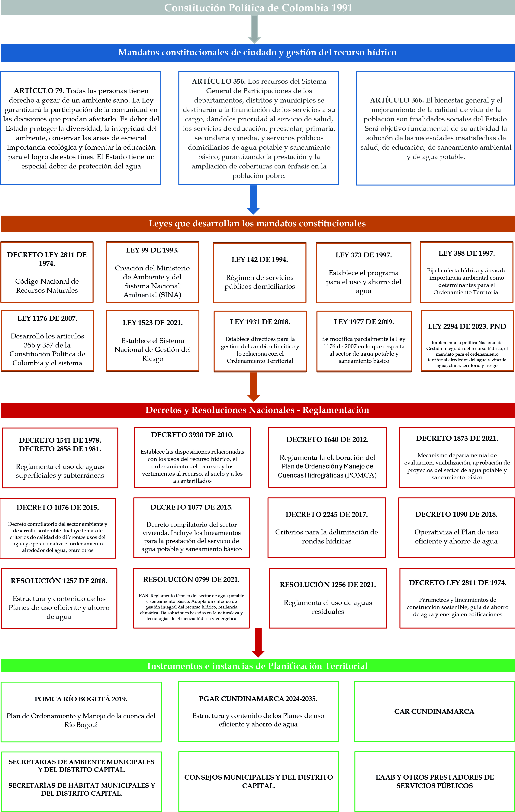
Fuente: Elaboración Sociedad de Mejoras y Ornato de BogotáNo obstante, el avance hacia una gestión verdaderamente integral sigue enfrentando tensiones: la fragmentación institucional —Ministerio de Ambiente y Desarrollo Sostenible, Ministerio de Vivienda, CAR, Gobernación de Cundinamarca, Secretaría Distrital de Ambiente, EAAB, municipios—, la limitada participación ciudadana incidente en el paisaje y la persistencia de una visión tecnocrática del agua, sin tener en cuenta su carácter de sistema complejo adaptativo con una parte social y natural, dificultan la gobernanza requerida ante el cambio climático y la desigualdad socioespacial.
Estos retos requieren abordar la gestión del agua desde una visión compleja que tenga en cuenta la infraestructura existente descrita en la sección anterior, el marco normativo vigente, y los avances tecnológicos y culturales que están ocurriendo en otros lugares del mundo, que están avanzando hacia una gestión del recurso hídrico para la sostenibilidad territorial.
Además, se debe comprender que, a pesar de la fragmentación institucional del sector público y privado, una gestión del agua desde la participación incidente de ciudadanos y organizaciones civiles, puede actuar como catalizador para la transformación cultural requerida.
2.9.1. Transformación cultural hacia una gestión del agua para la sostenibilidad territorial
Al analizar los aciertos y errores de las últimas décadas, en el marco de la gestión del agua, se hace visible la necesidad de incorporar la gestión del agua para la sostenibilidad territorial que ve al recurso hídrico, no como una responsabilidad únicamente del Estado, sino como una responsabilidad de todos los ciudadanos, empresas privadas y demás actores tanto humanos como no humanos del territorio.
Esta es una gestión compleja porque reconoce la interdependencia entre sistemas naturales, técnicos y sociales; integral, porque articula los niveles ecológico, urbano, rural y cultural; y proactiva, porque busca anticipar riesgos y promover resiliencia a través de mejorar la seguridad territorial frente a la incertidumbre que trae el cambio climático. Desde una forma de gestión articulada, participativa, política, técnica y económica, la sostenibilidad hídrica de Bogotá depende de:
· La articulación entre el sistema de acueducto y alcantarillado (infraestructura gris) y la Estructura Ecológica Principal (infraestructura verde y azul), para generar resiliencia a nivel urbano, rural, a escala regional y para el futuro.
· Participación ciudadana en la planificación de cuencas y la conservación de humedales y fuentes de agua. Esto ya ocurre en escenarios como el Consejo de la Cuenca del Río Bogotá, las comisiones ambientales locales, organizaciones y veedurías ambientales, y juntas de acción comunal, entre otras.
· Decisiones políticas y jurídicas que reconozcan el agua y la EEP como bien común y garanticen equidad en el acceso. Por ejemplo, sentencias que hacen a la naturaleza sujeto de derechos reconocen esa conexión entre lo natural y lo cultural. A pesar de los esfuerzos, todavía se requiere una mayor implementación de estas decisiones jurídicas y políticas, para generar la resignificación cultural requerida de la relación naturaleza – cultura.
· Rigor técnico e innovación tecnológica en la gestión de la infraestructura gris y verde para la gestión del agua, la evaluación de la línea base ambiental, evaluación de impactos ambientales, cuantificación de servicios ecosistémicos, y en la implementación de soluciones basadas en la naturaleza.
· Instrumentos económicos que internalicen los costos ambientales e incentiven acciones en restauración y conservación.
La gestión del agua en Bogotá ha transitado desde una perspectiva sectorial y reactiva —centrada en el suministro urbano y el control de inundaciones— hacia una gestión para la sostenibilidad territorial, donde el agua se entiende como un sistema vivo que articula procesos ecológicos, paisajísticos y sociales.
2.9.2. Estructura Ecológica Principal para vincular naturaleza y cultura
El papel preponderante del agua en el desarrollo urbano se debe abordar desde la Estructura Ecológica Principal-EEP, introducida en los Planes de Ordenamiento Territorial a partir de la Ley 388 de 1997. Actualmente, está establecida según los determinantes ambientales fijados en el PGAR 2024-2035, y es entendida como el conjunto de ecosistemas y corredores ecológicos que sustentan la vida, la biodiversidad, los servicios ecosistémicos, y el bienestar y la seguridad territorial para la resiliencia urbana y rural de Bogotá y la región.
Desde los años noventa, la EEP fue incorporada en los Planes de Ordenamiento Territorial-POTs de Bogotá y los municipios, como una estructura para el soporte del Sistema Ambiental de Bogotá, que incluye ríos, humedales, lagos, páramos, ecosistemas endémicos, cerros, parques[12] y zonas de recarga de acuíferos. Este concepto, derivado de los modelos europeos de “ecological networks” y “green infrastructure”, buscó restablecer la conectividad ecológica perdida por la expansión urbana.
El ciclo hídrico no depende de un solo estado del agua —líquido, gas o sólido— sino que se deben tener en cuenta las interacciones que el agua, en todos sus estados, tiene en las etapas del ciclo hídrico con la infraestructura verde-azul —ecosistemas, geología, cuerpos de agua y Estructura Ecológica Principal, en general— y la infraestructura gris —edificios, pavimento, represas, sistema de acueducto y alcantarillado—.
La EEP enfrenta retos conceptuales e institucionales, como: la ya mencionada desarticulación entre entidades; la falta de coordinación entre divisiones territoriales, escalas espaciales y temporales; la multiplicidad de prioridades por diferentes visiones disciplinares, en un escenario de inversiones limitada; y, la escasa integración entre infraestructura verde, azul y gris. Sin embargo, su potencial radica en constituirse como una estructura articuladora del paisaje entre lo natural y lo cultural, lo urbano y lo rural, donde el agua actúa como hilo conductor y vinculante de estas dimensiones dentro del territorio.
La materialización de la EEP implica una visión compleja e integral del agua, no como un recurso, sino como un hilo tejido a través de interacciones biofísicas y culturales que requiere transformaciones territoriales con enfoques interdisciplinarios, participación comunitaria y planificación a múltiples escalas espaciales y temporales.
La EEP de Bogotá y Cundinamarca, descrita en los documentos técnicos de la CAR (PGAR 2024–2035), e instrumentos de planificación de orden municipal y distrital como los POT, constituye la infraestructura verde y azul que regula el ciclo hidrológico, potencia la integridad ecosistémica del territorio, baja la temperatura urbana, mejora la calidad del aire y del agua, protege los suelos, previene y mitiga desastres, y provee servicios ecosistémicos esenciales para la población.
Así, la Estructura Ecológica Principal busca que el Sistema Ambiental funcione al proveer los servicios ecosistémicos y sostener la biodiversidad del territorio. De esta manera, la EEP aporta en muchos aspectos de la seguridad territorial para generar mayor bienestar en la población. La EEP de la región se encuentra en el mapa 1 de esta sección, y un ejemplo a nivel distrital se encuentra en el siguiente mapa.
El deterioro de la EEP genera altos riesgos sociales y ambientales, que cuando se concretan se traducen en costos económicos para los ciudadanos, el sector privado y el gobierno. Su fortalecimiento, en cambio, es clave para una gestión proactiva del riesgo climático, la gestión del agua potable y una seguridad territorial urbana y rural sostenida. La convergencia actual de los procesos históricos y conceptuales, tanto de la EEP como del sistema de acueducto de Bogotá, permite delinear una nueva perspectiva para la gestión del líquido vital.
Esta nueva perspectiva se consolida con la adopción de la Política Pública Nacional de Gestión Integral del Recurso Hídrico-GIRH, en el año 2010, que promueve la planificación por cuencas, la coordinación interinstitucional, el uso eficiente y la protección de ecosistemas estratégicos. Además, desde la Constitución Política de 1991, se han expedido leyes y decretos para reglamentar la calidad del agua de cualquier tipo o uso, incluida la de los vertimientos causados por las diferentes actividades humanas, así como para el uso eficiente y ahorro de agua en el sector residencial, industrial, comercial e institucional. De esta forma se ha avanzado en mejorar tanto la calidad del agua antes de su captación para su consumo, como la que fluye hacia y por los ríos, humedales, nubes y acuíferos del territorio.
La Bogotá urbana que muchos de los ciudadanos tenemos en mente, no puede entenderse aisladamente de su parte rural ni de su entorno regional. La ciudad depende casi totalmente de sistemas hídricos externos —principalmente el páramo de Chingaza y las subcuencas del río Chuza, el Blanco, el Tunjuelo, el Neusa, el Siecha, el Aves, el Sisga, y la cuenca alta del río Bogotá— para su abastecimiento. Estos ecosistemas de alta montaña de otros municipios, reconocidos por su capacidad de regulación hídrica, actúan como infraestructuras verdes y azules que garantizan la oferta de agua a millones de personas. A pesar esta dependencia, en las últimas décadas se evidencia una pérdida de integridad ecosistémica debido a la deforestación, la minería, la expansión de la frontera agrícola y urbana, la suburbanización, y la incertidumbre que implica el cambio climático.
La relación entre los ciudadanos, instituciones e infraestructuras grises humanas de Bogotá, y sus infraestructuras verdes-azules, su entorno natural e hídrico debe transformarse de una relación extractiva a una relación simbiótica y solidaria. En otras palabras, el agua no debe verse como un recurso que sale del grifo, sino como el vínculo material más importante y cercano que tenemos con el territorio, y que exige reciprocidad al proteger las fuentes que nos abastecen y a las que impactamos con vertimientos.
De esta manera, la gestión del agua para la sostenibilidad territorial implica articular la Estructura Ecológica Principal-EEP del Sistema Ambiental de la Sabana, con los instrumentos de ordenamiento territorial del área metropolitana y de los municipios de la cuenca alta del río Bogotá, materializando la región hídrica de Bogotá con gobernanza compartida.
La consolidación del Sistema Ambiental de Bogotá es necesaria para lograr esta visión. Un sistema continuo de cerros, bosques, humedales, ríos y zonas verdes que reconecta la ciudad y sus ciudadanos con sus cuerpos de agua, mejorando la regulación de la cantidad y calidad hídrica, y ofreciendo espacios públicos verdes y resilientes por y para los ciudadanos. Este sistema constituye un modelo innovador de planificación urbana con el agua como ordenadora del territorio, que materializa las soluciones basadas en la naturaleza 10 como un acercamiento a la seguridad hídrica, sostenibilidad territorial, justicia ambiental y bienestar.
Mapa 5. Espacio público con potencial de conservación, restauración y aprovechamiento de la infraestructura verde y azul para articular con la infraestructura gris
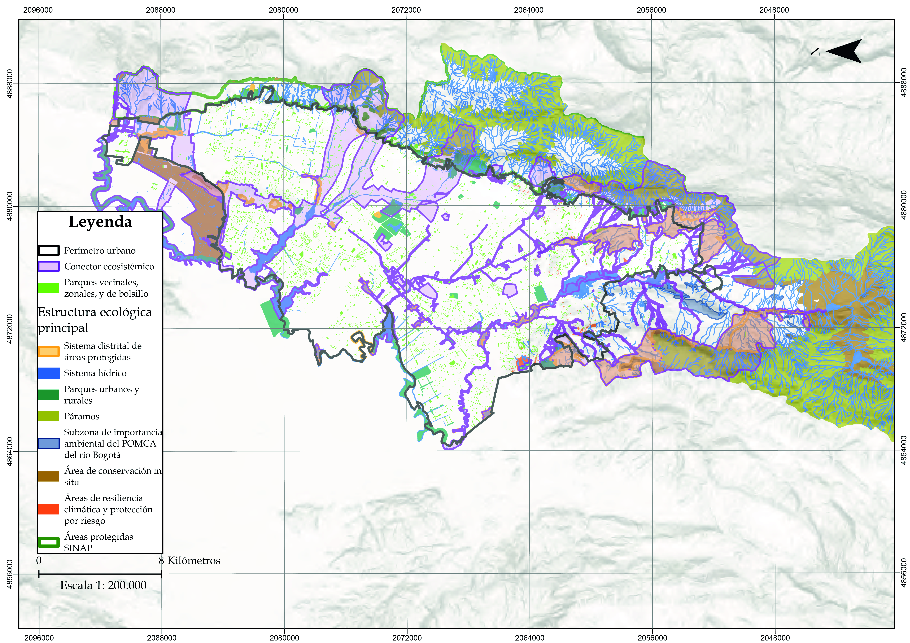
Fuente: Elaboración Sociedad de Mejoras y Ornato de Bogotá2.10. Modelo del Sistema de Acueducto de Bogotá
Para comprender el funcionamiento del Sistema de Acueducto de Bogotá, se desarrolló un modelo como herramienta pedagógica, para que los cursantes de Cátedra Bogotá puedan identificar, analizar y entender el rol de los diferentes componentes del Sistema, de la civilidad, y de cada uno como ciudadano.
El propósito de esta sección y del modelo es sensibilizar a los estudiantes sobre los impactos sobre el Sistema que tienen: el consumo de agua como individuo y sociedad en el territorio, la gestión de las cuencas hidrográficas y de los embalses, las características técnicas del Sistema de Acueducto y la cultura de reutilización, y el ahorro y uso eficiente del agua. Este no pretende ser un modelo técnico para la toma de decisiones de profesionales de la EAAB, sino un modelo teórico para que los ciudadanos comprendan el funcionamiento del sistema de acueducto y tengan una mayor conciencia de las acciones que como individuos y sociedad, deben llevar a cabo para llegar a una gestión del agua para la sostenibilidad territorial.
El modelo se debe descargar de DATACIVILIDAD y sus instrucciones se encuentran en la primera página del Excel, la navegación se hace haciendo clic en las diferentes partes de los subsistemas que se explicarán más adelante, e insertando los datos en las celdas que están en blanco, únicamente.
La información sobre los embalses y las PTAP fue obtenida de la Empresa de Acueducto y Alcantarillado de Bogotá. La de las cuencas de los embalses, con análisis geoespacial en Sistemas de Información Geográfica. La precipitación, en base a información histórica de estaciones pluviométricas del IDEAM. Las proyecciones de población, con información de la Sociedad de Mejoras y Ornato de Bogotá. Y los consumos de duchas, grifos, inodoros, lavaplatos y lavadora, del certificado LEED y promedios de las tecnologías del mercado actual. El resto de las referencias relevantes se encuentran a lo largo del modelo.
2.11.1. Subsistema de cuencas hidrográficas, embalses y PTAP del Sistema de Acueducto de Bogotá
El componente natural y tecnológico que es el Subsistema Hidrográfico y de Embalses, con todos los parámetros que influyen en la capacidad de este primer subsistema de ofertar agua —en otras palabras, los ingresos de agua al Sistema de Acueducto—, se deben tener en cuenta como determinante de primer nivel del funcionamiento del Sistema de Acueducto de Bogotá.
Este subsistema es representado dentro del Sistema de Acueducto de Bogotá en la delineación verde, que incluye las características de la precipitación en el territorio de los diferentes sistemas de embalses, las características de la cobertura del suelo de las cuencas de los embalses, las características de la capacidad y almacenamiento de los embalses, y de las plantas de tratamiento de agua potable.
Imagen 14. Cuadro de análisis subsistema natural y tecnológico del Sistema de Acueducto de Bogotá
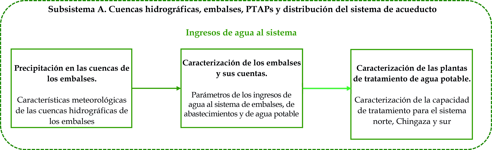
Fuente: Elaboración Sociedad de Mejoras y Ornato de Bogotá2.11.2 Subsistema de demanda de agua potable efectiva para Bogotá D.C. y municipios que usan el agua del Sistema de Acueducto de Bogotá
Por otro lado, está el componente del subsistema de distribución y demanda de agua potable para Bogotá D. C. y los municipios que usan el agua del sistema de acueducto, en otras palabras, los egresos del Sistema de Acueducto de Bogotá. Este parte de la siguiente premisa: la cantidad de agua que consume la ciudad se obtiene del agua que consume una casa según parámetros de acciones cotidianas, como bañarse, usar los lavamanos, la lavadora, el inodoro, el lavaplatos o el agua utilizada para beber. Esto se multiplica por la cantidad de habitantes de la ciudad, como si todos los habitantes de Bogotá consumieran agua tal como fue supuesto en los parámetros.
Además, este subsistema tiene en cuenta la población de Bogotá y los municipios que se sirven del Sistema de Acueducto, en el presente o un escenario futuro, dado el consumo per cápita encontrado con las acciones cotidianas listadas anteriormente, la población residente que se sirve del servicio de acueducto, y el porcentaje que se utiliza para el sector residencial, el comercio, las instituciones y el agro y la industria.
Por último, este subsistema también tiene en cuenta las pérdidas de agua que se pueden dar en el sistema de distribución. Son las fugas en los sistemas de tratamiento y las tuberías de distribución, el adulteramiento de contadores en las casas o establecimientos que utilicen el servicio del Sistema de Acueducto, o las conexiones ilegales.
Imagen 15. Cuadro de análisis subsistema cultural del Sistema de Acueducto de Bogotá
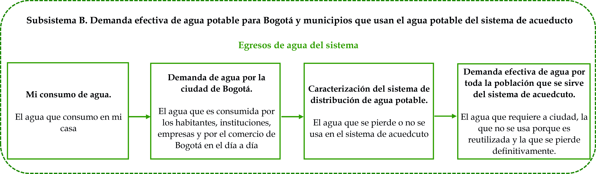
Fuente: Elaboración Sociedad de Mejoras y Ornato de BogotáImagen 16. Resultados del modelo del Sistema de Acueducto de Bogotá
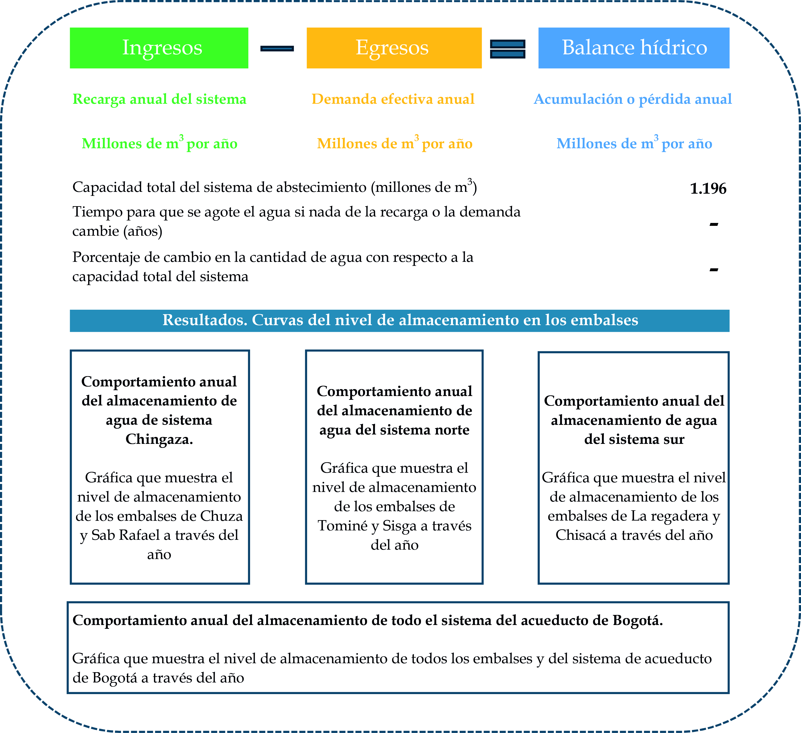
Fuente: Elaboración Sociedad de Mejoras y Ornato de BogotáTeniendo en cuenta el comportamiento y los resultados de los dos subsistemas explicados anteriormente, se tienen los ingresos y egresos del Sistema de Acueducto de Bogotá. Con esta información, el modelo ya es capaz de dar los resultados del balance hídrico que muestra cómo cambió el almacenamiento de agua en el Sistema de Acueducto, mes a mes, en el año que simula el modelo.
Es importante recalcar que este no es un modelo con capacidades para decisiones técnicas, pues no toma en cuenta variables relevantes como lo son la evaporación, evapotranspiración, la infiltración de agua a los acuíferos subterráneos, y diferentes fenómenos meteorológicos como el ENSO, que deberían ser tomados en cuenta si se quiere un modelo preciso de balance hídrico para la toma de decisiones.
Imagen 17. Resultado del balance hídrico positivo
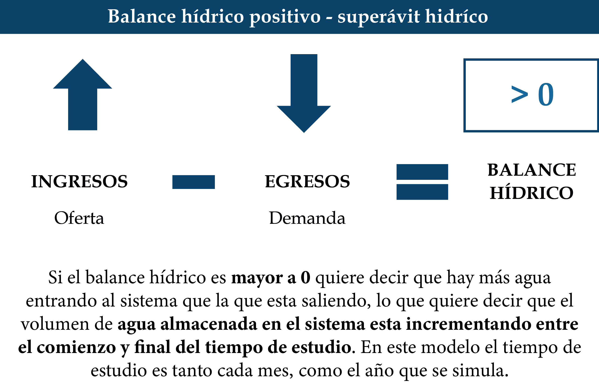
Fuente: Elaboración Sociedad de Mejoras y Ornato de BogotáImagen 18. Balance hídrico neutral
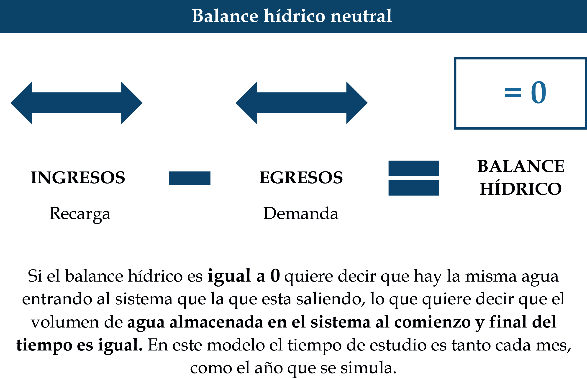
Fuente: Elaboración Sociedad de Mejoras y Ornato de BogotáImagen 19. Balance hídrico negativo
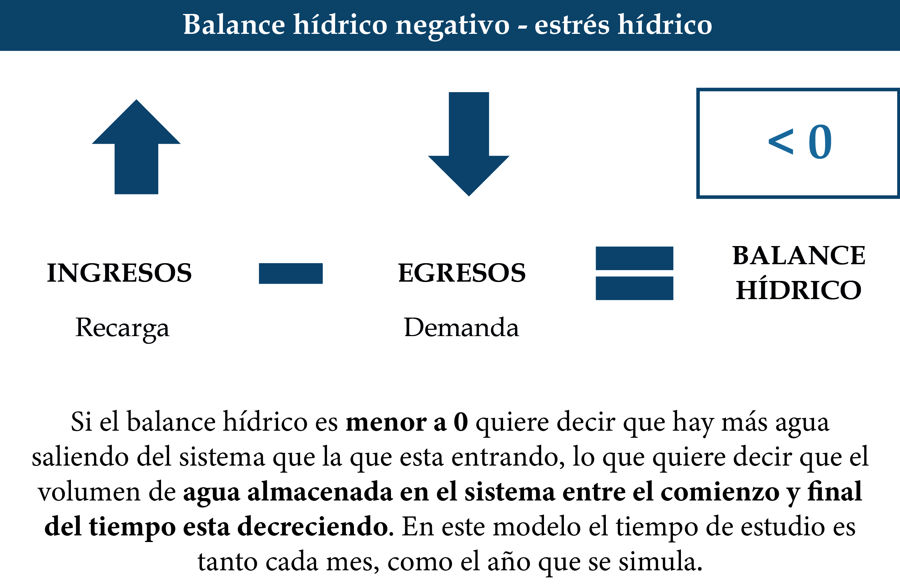
Fuente: Elaboración Sociedad de Mejoras y Ornato de BogotáEntendiendo que la precipitación varía a lo largo del año y que los niveles de los embalses pueden comenzar con cantidades de aguas almacenadas diferentes, los resultados del modelo también incluyen las gráficas del nivel de almacenamiento de los embalses a lo largo del año. Con esta representación de los resultados, se puede ver cómo cambia a lo largo del año el nivel de los embalses dependiendo de las temporadas de lluvia. Además, es otra manera de representar el balance hídrico, ya que, si la curva de nivel de almacenamiento termina más alta del punto de inicio, significa que hay un balance hídrico positivo, y si por el contrario termina más abajo del punto de inicio, significa que hay un balance hídrico negativo.
Sección 5.2.2 Sistema de hábitat
Footnotes
-
Alcaldía Mayor de Bogotá; Empresa de Acueducto y Alcantarillado de Bogotá. Agua y ciudad relaciones para un desarrollo urbano sostenible (Bogotá: Instituto Distrital de Patrimonio Cultural–IDPC), 29. ↩
-
Alcaldía Mayor de Bogotá; Empresa de Acueducto y Alcantarillado de Bogotá. Agua y ciudad relaciones para un desarrollo urbano sostenible (Bogotá: Instituto Distrital de Patrimonio Cultural – IDPC), 31. ↩
-
Ernesto Guhl Nannetti. La región hídrica de Bogotá (Bogotá: Revista de la Academia Colombiana de Ciencias exactas, físicas y naturales, 2013), 330. ↩
-
Alcaldía Mayor de Bogotá; Empresa de Acueducto y Alcantarillado de Bogotá. Agua y ciudad relaciones para un desarrollo urbano sostenible (Bogotá: Instituto Distrital de Patrimonio Cultural–IDPC), 35. ↩
-
Ibid. ↩
-
Empresa de Acueducto y Alcantarillado de Bogotá – ESP. Disponible en: Geoportal EAAB ↩
-
Figueroa-Arango, C., Svensson, A., Mundoli, S., Nagendra, H., Sitas, N., Aoko, L., Carrillo, D., Caicedo, J.R., Cruz, R., Gordon, C., Gonzales, D., Jaja, Z., Kanyangi, W., Murillo-Morales, S.V., Oyola, S., Llloret, P., Melo, I., Mendez, H., Rahal, L., Ruiz, D., Sachica, M. S., & Zavala, P. 2024. Integrating nature-based solutions in cities from the Gobal South. Puntoaparte Editores. SELVAR nature-based thinking. ↩
-
Alcaldía Mayor de Bogotá; Secretaría Distrital de Planeación. MEP. Manual del Espacio Público (Bogotá, Alcaldía Mayor de Bogotá, 2023). ↩
-
Secretaría Distrital de Planeación; Secretaría Distrital de Ambiente; Secretaría Distrital de Hábitat. Ecourbanismo y construcción Sostenible (Bogotá: Alcaldía Mayor de Bogotá, 2023). ↩
-
Figueroa-Arango, C., Svensson, A., Mundoli, S., Nagendra, H., Sitas, N., Aoko, L., Carrillo, D., Caicedo, J.R., Cruz, R., Gordon, C., Gonzales, D., Jaja, Z., Kanyangi, W., Murillo-Morales, S.V., Oyola, S., Llloret, P., Melo, I., Mendez, H., Rahal, L., Ruiz, D., Sachica, M. S., & Zavala, P. 2024. Integrating nature-based solutions in cities from the Gobal South. Puntoaparte Editores. SELVAR nature-based thinking. ↩